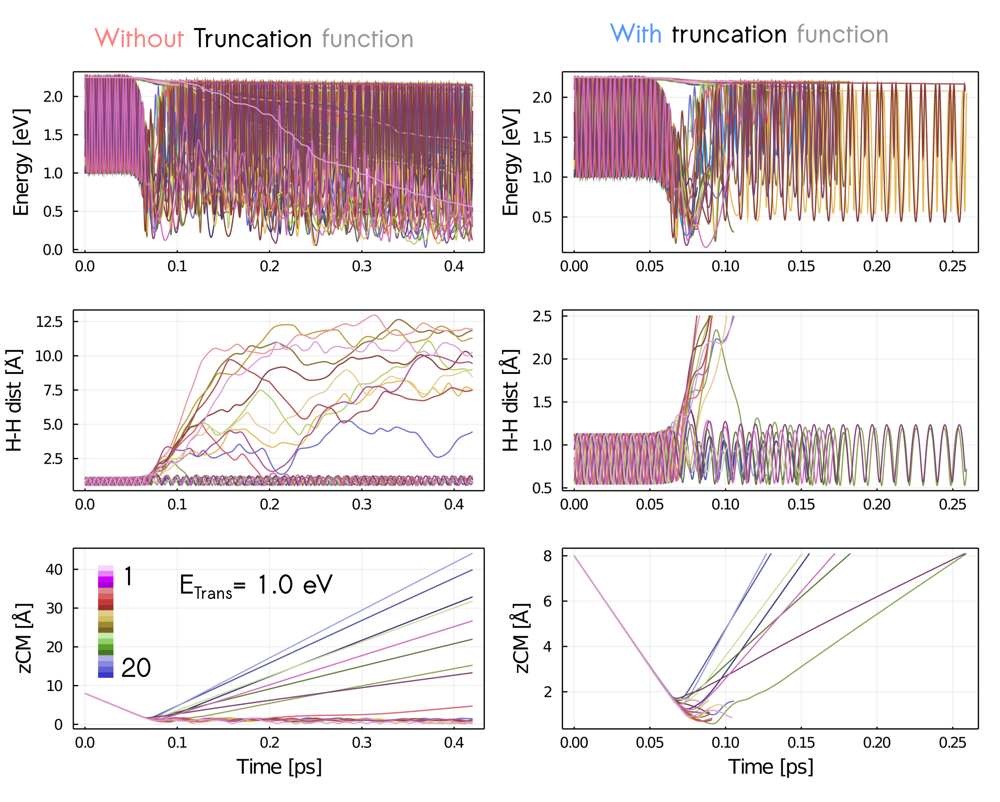

Reactive scattering from a metal surface
Our implementation allows us to simulate vibrational de-excitation probability during reactive scattering events at metal surfaces for any diatomic molecule with a suitable model to describe energies and forces (and friction coefficients for MDEF simulations). Here, we investigate the reactive scattering of hydrogen on a Ag(111) metal surface as a prototypical example.
To run this kind of simulation, a set of initial positions and velocities ($\mathbf{R}$ and $\mathbf{\dot{R}}$) with ro-vibrational quantum states $\nu$ and $j$ have to be generated (see EBK quantisation). With a specific ro-vibrational quantum state it is possible to compute different properties after molecular collision and energy transfer with the metal surface like the vibrational de-excitation probabilities discussed here.
In order to reproduce the state-to-state vibrational de-excitation probability results presented originally by Yaolong Zhang, Reinhard J. Maurer, Hua Guo, Bin Jiang (2019) for this system, the same initial conditions were generated with QuantisedDiatomic.generate_configurations setting the initial ro-vibrational quantum state to ($\nu=2, j=0$) as was explored in the original paper.
As shown earlier in the EBK documentation we are able to generate a semiclassically quantised distribution for a diatomic molecule on a collision course with a metal surface. In this example we follow the EBK example using the H2AgModel to prepare our initial distribution and run our simulation.
Specifically, we have produced a set of initial conditions with different translational energy (translational_energy keyword) ranging from 0.2 to 1.4 eV, locating the hydrogen molecule 8 Å away from the metal surface (height keyword) with a normal incidence.
As usual, all quantities default to atomic units. Here we use Unitful to input the translational energy and height using different units, where they are later converted internally.
using NQCDynamics
using NNInterfaces
using Unitful
using NQCDynamics.InitialConditions: QuantisedDiatomic
using JLD2
atoms = Atoms([:H, :H])
model = H2AgModel()
cell = PeriodicCell([11.1175 -5.5588 0.0; 0.0 9.628 0.0; 0.0 0.0 70.3079])
sim = Simulation(atoms, model; cell=cell)
ν, J = 2, 0 # selected ro-vibrational quantum states
nsamples = 300 # number of configurations
Ek = 0.5u"eV" # Translational energy [eV] ; range considered [0.2-1.4] eV
z = 8.0u"Å" # Height [Å] ; fixed at 8 Å
configurations = QuantisedDiatomic.generate_configurations(sim, ν, J;
samples=nsamples, translational_energy=Ek, height=z)
v = first.(configurations)
r = last.(configurations)
distribution = DynamicalDistribution(v, r, (3,2)) read all parameters done
Binding curve
+----------------------------------------+
0.5 | | Actual values
| | Fitted curve
| . |
| : |
| : |
| :. |
| : |
Energy / Hartree | : |
| : |
| : ....:'''''|
| : ...''' |
| :. .:'' |
| : ..:'' |
| ': .:' |
0 | ':....:' |
+----------------------------------------+
0 5
Bond length / bohr
[ Info: The two lines shown above should closely match. This indicates the evaluation of the potential is working correctly.
[ Info: Converging the total energy to match the chosen quantum numbers...
Iter Function value Gradient norm
0 1.631625e-01 5.780057e+01
* time: 0.028345108032226562
1 8.028443e-02 5.753928e+01
* time: 2.096095085144043
2 7.569671e-04 5.728559e+01
* time: 2.096359968185425
3 4.676433e-04 5.728941e+01
* time: 2.0966310501098633
[ Info: Generating distribution of bond lengths and radial momenta...
Sampling 0%| | ETA: N/A
Sampling 0%|▏ | ETA: 0:00:06
Sampling 1%|▎ | ETA: 0:00:07
Sampling 1%|▍ | ETA: 0:00:05
Sampling 1%|▌ | ETA: 0:00:04
Sampling 2%|▊ | ETA: 0:00:03
Sampling 2%|▉ | ETA: 0:00:02
Sampling 2%|█ | ETA: 0:00:02
Sampling 3%|█▏ | ETA: 0:00:02
Sampling 3%|█▎ | ETA: 0:00:02
Sampling 3%|█▍ | ETA: 0:00:01
Sampling 4%|█▌ | ETA: 0:00:01
Sampling 4%|█▋ | ETA: 0:00:01
Sampling 4%|█▉ | ETA: 0:00:01
Sampling 5%|██ | ETA: 0:00:01
Sampling 5%|██▏ | ETA: 0:00:01
Sampling 5%|██▎ | ETA: 0:00:01
Sampling 6%|██▍ | ETA: 0:00:01
Sampling 6%|██▌ | ETA: 0:00:01
Sampling 6%|██▋ | ETA: 0:00:01
Sampling 7%|██▊ | ETA: 0:00:01
Sampling 7%|███ | ETA: 0:00:01
Sampling 7%|███▏ | ETA: 0:00:01
Sampling 8%|███▎ | ETA: 0:00:01
Sampling 8%|███▍ | ETA: 0:00:01
Sampling 8%|███▌ | ETA: 0:00:01
Sampling 9%|███▋ | ETA: 0:00:01
Sampling 9%|███▊ | ETA: 0:00:01
Sampling 9%|███▉ | ETA: 0:00:00
Sampling 10%|████ | ETA: 0:00:00
Sampling 10%|████▎ | ETA: 0:00:00
Sampling 10%|████▍ | ETA: 0:00:00
Sampling 11%|████▌ | ETA: 0:00:00
Sampling 11%|████▋ | ETA: 0:00:00
Sampling 11%|████▊ | ETA: 0:00:00
Sampling 12%|████▉ | ETA: 0:00:00
Sampling 12%|█████ | ETA: 0:00:00
Sampling 12%|█████▏ | ETA: 0:00:00
Sampling 13%|█████▍ | ETA: 0:00:00
Sampling 13%|█████▌ | ETA: 0:00:00
Sampling 13%|█████▋ | ETA: 0:00:00
Sampling 14%|█████▊ | ETA: 0:00:00
Sampling 14%|█████▉ | ETA: 0:00:00
Sampling 14%|██████ | ETA: 0:00:00
Sampling 15%|██████▏ | ETA: 0:00:00
Sampling 15%|██████▎ | ETA: 0:00:00
Sampling 15%|██████▌ | ETA: 0:00:00
Sampling 16%|██████▋ | ETA: 0:00:00
Sampling 16%|██████▊ | ETA: 0:00:00
Sampling 16%|██████▉ | ETA: 0:00:00
Sampling 17%|███████ | ETA: 0:00:00
Sampling 17%|███████▏ | ETA: 0:00:00
Sampling 17%|███████▎ | ETA: 0:00:00
Sampling 18%|███████▍ | ETA: 0:00:00
Sampling 18%|███████▌ | ETA: 0:00:00
Sampling 18%|███████▊ | ETA: 0:00:00
Sampling 19%|███████▉ | ETA: 0:00:00
Sampling 19%|████████ | ETA: 0:00:00
Sampling 19%|████████▏ | ETA: 0:00:00
Sampling 20%|████████▎ | ETA: 0:00:00
Sampling 20%|████████▍ | ETA: 0:00:00
Sampling 20%|████████▌ | ETA: 0:00:00
Sampling 21%|████████▋ | ETA: 0:00:00
Sampling 21%|████████▉ | ETA: 0:00:00
Sampling 21%|█████████ | ETA: 0:00:00
Sampling 22%|█████████▏ | ETA: 0:00:00
Sampling 22%|█████████▎ | ETA: 0:00:00
Sampling 22%|█████████▍ | ETA: 0:00:00
Sampling 23%|█████████▌ | ETA: 0:00:00
Sampling 23%|█████████▋ | ETA: 0:00:00
Sampling 23%|█████████▊ | ETA: 0:00:00
Sampling 24%|██████████ | ETA: 0:00:00
Sampling 24%|██████████▏ | ETA: 0:00:00
Sampling 24%|██████████▎ | ETA: 0:00:00
Sampling 25%|██████████▍ | ETA: 0:00:00
Sampling 25%|██████████▌ | ETA: 0:00:00
Sampling 25%|██████████▋ | ETA: 0:00:00
Sampling 26%|██████████▊ | ETA: 0:00:00
Sampling 26%|██████████▉ | ETA: 0:00:00
Sampling 26%|███████████ | ETA: 0:00:00
Sampling 27%|███████████▎ | ETA: 0:00:00
Sampling 27%|███████████▍ | ETA: 0:00:00
Sampling 27%|███████████▌ | ETA: 0:00:00
Sampling 28%|███████████▋ | ETA: 0:00:00
Sampling 28%|███████████▊ | ETA: 0:00:00
Sampling 28%|███████████▉ | ETA: 0:00:00
Sampling 29%|████████████ | ETA: 0:00:00
Sampling 29%|████████████▏ | ETA: 0:00:00
Sampling 29%|████████████▍ | ETA: 0:00:00
Sampling 30%|████████████▌ | ETA: 0:00:00
Sampling 30%|████████████▋ | ETA: 0:00:00
Sampling 30%|████████████▊ | ETA: 0:00:00
Sampling 31%|████████████▉ | ETA: 0:00:00
Sampling 31%|█████████████ | ETA: 0:00:00
Sampling 31%|█████████████▏ | ETA: 0:00:00
Sampling 32%|█████████████▎ | ETA: 0:00:00
Sampling 32%|█████████████▌ | ETA: 0:00:00
Sampling 32%|█████████████▋ | ETA: 0:00:00
Sampling 33%|█████████████▊ | ETA: 0:00:00
Sampling 33%|█████████████▉ | ETA: 0:00:00
Sampling 33%|██████████████ | ETA: 0:00:00
Sampling 34%|██████████████▏ | ETA: 0:00:00
Sampling 34%|██████████████▎ | ETA: 0:00:00
Sampling 34%|██████████████▍ | ETA: 0:00:00
Sampling 35%|██████████████▌ | ETA: 0:00:00
Sampling 35%|██████████████▊ | ETA: 0:00:00
Sampling 35%|██████████████▉ | ETA: 0:00:00
Sampling 36%|███████████████ | ETA: 0:00:00
Sampling 36%|███████████████▏ | ETA: 0:00:00
Sampling 36%|███████████████▎ | ETA: 0:00:00
Sampling 37%|███████████████▍ | ETA: 0:00:00
Sampling 37%|███████████████▌ | ETA: 0:00:00
Sampling 37%|███████████████▋ | ETA: 0:00:00
Sampling 38%|███████████████▉ | ETA: 0:00:00
Sampling 38%|████████████████ | ETA: 0:00:00
Sampling 38%|████████████████▏ | ETA: 0:00:00
Sampling 39%|████████████████▎ | ETA: 0:00:00
Sampling 39%|████████████████▍ | ETA: 0:00:00
Sampling 39%|████████████████▌ | ETA: 0:00:00
Sampling 40%|████████████████▋ | ETA: 0:00:00
Sampling 40%|████████████████▊ | ETA: 0:00:00
Sampling 40%|█████████████████ | ETA: 0:00:00
Sampling 41%|█████████████████▏ | ETA: 0:00:00
Sampling 41%|█████████████████▎ | ETA: 0:00:00
Sampling 41%|█████████████████▍ | ETA: 0:00:00
Sampling 42%|█████████████████▌ | ETA: 0:00:00
Sampling 42%|█████████████████▋ | ETA: 0:00:00
Sampling 42%|█████████████████▊ | ETA: 0:00:00
Sampling 43%|█████████████████▉ | ETA: 0:00:00
Sampling 43%|██████████████████ | ETA: 0:00:00
Sampling 43%|██████████████████▎ | ETA: 0:00:00
Sampling 44%|██████████████████▍ | ETA: 0:00:00
Sampling 44%|██████████████████▌ | ETA: 0:00:00
Sampling 44%|██████████████████▋ | ETA: 0:00:00
Sampling 45%|██████████████████▊ | ETA: 0:00:00
Sampling 45%|██████████████████▉ | ETA: 0:00:00
Sampling 45%|███████████████████ | ETA: 0:00:00
Sampling 46%|███████████████████▏ | ETA: 0:00:00
Sampling 46%|███████████████████▍ | ETA: 0:00:00
Sampling 46%|███████████████████▌ | ETA: 0:00:00
Sampling 47%|███████████████████▋ | ETA: 0:00:00
Sampling 47%|███████████████████▊ | ETA: 0:00:00
Sampling 47%|███████████████████▉ | ETA: 0:00:00
Sampling 48%|████████████████████ | ETA: 0:00:00
Sampling 48%|████████████████████▏ | ETA: 0:00:00
Sampling 48%|████████████████████▎ | ETA: 0:00:00
Sampling 49%|████████████████████▌ | ETA: 0:00:00
Sampling 49%|████████████████████▋ | ETA: 0:00:00
Sampling 49%|████████████████████▊ | ETA: 0:00:00
Sampling 50%|████████████████████▉ | ETA: 0:00:00
Sampling 50%|█████████████████████ | ETA: 0:00:00
Sampling 50%|█████████████████████▏ | ETA: 0:00:00
Sampling 51%|█████████████████████▎ | ETA: 0:00:00
Sampling 51%|█████████████████████▍ | ETA: 0:00:00
Sampling 51%|█████████████████████▌ | ETA: 0:00:00
Sampling 52%|█████████████████████▊ | ETA: 0:00:00
Sampling 52%|█████████████████████▉ | ETA: 0:00:00
Sampling 52%|██████████████████████ | ETA: 0:00:00
Sampling 53%|██████████████████████▏ | ETA: 0:00:00
Sampling 53%|██████████████████████▎ | ETA: 0:00:00
Sampling 53%|██████████████████████▍ | ETA: 0:00:00
Sampling 54%|██████████████████████▌ | ETA: 0:00:00
Sampling 54%|██████████████████████▋ | ETA: 0:00:00
Sampling 54%|██████████████████████▉ | ETA: 0:00:00
Sampling 55%|███████████████████████ | ETA: 0:00:00
Sampling 55%|███████████████████████▏ | ETA: 0:00:00
Sampling 55%|███████████████████████▎ | ETA: 0:00:00
Sampling 56%|███████████████████████▍ | ETA: 0:00:00
Sampling 56%|███████████████████████▌ | ETA: 0:00:00
Sampling 56%|███████████████████████▋ | ETA: 0:00:00
Sampling 57%|███████████████████████▊ | ETA: 0:00:00
Sampling 57%|████████████████████████ | ETA: 0:00:00
Sampling 57%|████████████████████████▏ | ETA: 0:00:00
Sampling 58%|████████████████████████▎ | ETA: 0:00:00
Sampling 58%|████████████████████████▍ | ETA: 0:00:00
Sampling 58%|████████████████████████▌ | ETA: 0:00:00
Sampling 59%|████████████████████████▋ | ETA: 0:00:00
Sampling 59%|████████████████████████▊ | ETA: 0:00:00
Sampling 59%|████████████████████████▉ | ETA: 0:00:00
Sampling 60%|█████████████████████████ | ETA: 0:00:00
Sampling 60%|█████████████████████████▎ | ETA: 0:00:00
Sampling 60%|█████████████████████████▍ | ETA: 0:00:00
Sampling 61%|█████████████████████████▌ | ETA: 0:00:00
Sampling 61%|█████████████████████████▋ | ETA: 0:00:00
Sampling 61%|█████████████████████████▊ | ETA: 0:00:00
Sampling 62%|█████████████████████████▉ | ETA: 0:00:00
Sampling 62%|██████████████████████████ | ETA: 0:00:00
Sampling 62%|██████████████████████████▏ | ETA: 0:00:00
Sampling 63%|██████████████████████████▍ | ETA: 0:00:00
Sampling 63%|██████████████████████████▌ | ETA: 0:00:00
Sampling 63%|██████████████████████████▋ | ETA: 0:00:00
Sampling 64%|██████████████████████████▊ | ETA: 0:00:00
Sampling 64%|██████████████████████████▉ | ETA: 0:00:00
Sampling 64%|███████████████████████████ | ETA: 0:00:00
Sampling 65%|███████████████████████████▏ | ETA: 0:00:00
Sampling 65%|███████████████████████████▎ | ETA: 0:00:00
Sampling 65%|███████████████████████████▌ | ETA: 0:00:00
Sampling 66%|███████████████████████████▋ | ETA: 0:00:00
Sampling 66%|███████████████████████████▊ | ETA: 0:00:00
Sampling 66%|███████████████████████████▉ | ETA: 0:00:00
Sampling 67%|████████████████████████████ | ETA: 0:00:00
Sampling 67%|████████████████████████████▏ | ETA: 0:00:00
Sampling 67%|████████████████████████████▎ | ETA: 0:00:00
Sampling 68%|████████████████████████████▍ | ETA: 0:00:00
Sampling 68%|████████████████████████████▌ | ETA: 0:00:00
Sampling 68%|████████████████████████████▊ | ETA: 0:00:00
Sampling 69%|████████████████████████████▉ | ETA: 0:00:00
Sampling 69%|█████████████████████████████ | ETA: 0:00:00
Sampling 69%|█████████████████████████████▏ | ETA: 0:00:00
Sampling 70%|█████████████████████████████▎ | ETA: 0:00:00
Sampling 70%|█████████████████████████████▍ | ETA: 0:00:00
Sampling 70%|█████████████████████████████▌ | ETA: 0:00:00
Sampling 71%|█████████████████████████████▋ | ETA: 0:00:00
Sampling 71%|█████████████████████████████▉ | ETA: 0:00:00
Sampling 71%|██████████████████████████████ | ETA: 0:00:00
Sampling 72%|██████████████████████████████▏ | ETA: 0:00:00
Sampling 72%|██████████████████████████████▎ | ETA: 0:00:00
Sampling 72%|██████████████████████████████▍ | ETA: 0:00:00
Sampling 73%|██████████████████████████████▌ | ETA: 0:00:00
Sampling 73%|██████████████████████████████▋ | ETA: 0:00:00
Sampling 73%|██████████████████████████████▊ | ETA: 0:00:00
Sampling 74%|███████████████████████████████ | ETA: 0:00:00
Sampling 74%|███████████████████████████████▏ | ETA: 0:00:00
Sampling 74%|███████████████████████████████▎ | ETA: 0:00:00
Sampling 75%|███████████████████████████████▍ | ETA: 0:00:00
Sampling 75%|███████████████████████████████▌ | ETA: 0:00:00
Sampling 75%|███████████████████████████████▋ | ETA: 0:00:00
Sampling 76%|███████████████████████████████▊ | ETA: 0:00:00
Sampling 76%|███████████████████████████████▉ | ETA: 0:00:00
Sampling 76%|████████████████████████████████ | ETA: 0:00:00
Sampling 77%|████████████████████████████████▎ | ETA: 0:00:00
Sampling 77%|████████████████████████████████▍ | ETA: 0:00:00
Sampling 77%|████████████████████████████████▌ | ETA: 0:00:00
Sampling 78%|████████████████████████████████▋ | ETA: 0:00:00
Sampling 78%|████████████████████████████████▊ | ETA: 0:00:00
Sampling 78%|████████████████████████████████▉ | ETA: 0:00:00
Sampling 79%|█████████████████████████████████ | ETA: 0:00:00
Sampling 79%|█████████████████████████████████▏ | ETA: 0:00:00
Sampling 79%|█████████████████████████████████▍ | ETA: 0:00:00
Sampling 80%|█████████████████████████████████▌ | ETA: 0:00:00
Sampling 80%|█████████████████████████████████▋ | ETA: 0:00:00
Sampling 80%|█████████████████████████████████▊ | ETA: 0:00:00
Sampling 81%|█████████████████████████████████▉ | ETA: 0:00:00
Sampling 81%|██████████████████████████████████ | ETA: 0:00:00
Sampling 81%|██████████████████████████████████▏ | ETA: 0:00:00
Sampling 82%|██████████████████████████████████▎ | ETA: 0:00:00
Sampling 82%|██████████████████████████████████▌ | ETA: 0:00:00
Sampling 82%|██████████████████████████████████▋ | ETA: 0:00:00
Sampling 83%|██████████████████████████████████▊ | ETA: 0:00:00
Sampling 83%|██████████████████████████████████▉ | ETA: 0:00:00
Sampling 83%|███████████████████████████████████ | ETA: 0:00:00
Sampling 84%|███████████████████████████████████▏ | ETA: 0:00:00
Sampling 84%|███████████████████████████████████▎ | ETA: 0:00:00
Sampling 84%|███████████████████████████████████▍ | ETA: 0:00:00
Sampling 85%|███████████████████████████████████▌ | ETA: 0:00:00
Sampling 85%|███████████████████████████████████▊ | ETA: 0:00:00
Sampling 85%|███████████████████████████████████▉ | ETA: 0:00:00
Sampling 86%|████████████████████████████████████ | ETA: 0:00:00
Sampling 86%|████████████████████████████████████▏ | ETA: 0:00:00
Sampling 86%|████████████████████████████████████▎ | ETA: 0:00:00
Sampling 87%|████████████████████████████████████▍ | ETA: 0:00:00
Sampling 87%|████████████████████████████████████▌ | ETA: 0:00:00
Sampling 87%|████████████████████████████████████▋ | ETA: 0:00:00
Sampling 88%|████████████████████████████████████▉ | ETA: 0:00:00
Sampling 88%|█████████████████████████████████████ | ETA: 0:00:00
Sampling 88%|█████████████████████████████████████▏ | ETA: 0:00:00
Sampling 89%|█████████████████████████████████████▎ | ETA: 0:00:00
Sampling 89%|█████████████████████████████████████▍ | ETA: 0:00:00
Sampling 89%|█████████████████████████████████████▌ | ETA: 0:00:00
Sampling 90%|█████████████████████████████████████▋ | ETA: 0:00:00
Sampling 90%|█████████████████████████████████████▊ | ETA: 0:00:00
Sampling 90%|██████████████████████████████████████ | ETA: 0:00:00
Sampling 91%|██████████████████████████████████████▏ | ETA: 0:00:00
Sampling 91%|██████████████████████████████████████▎ | ETA: 0:00:00
Sampling 91%|██████████████████████████████████████▍ | ETA: 0:00:00
Sampling 92%|██████████████████████████████████████▌ | ETA: 0:00:00
Sampling 92%|██████████████████████████████████████▋ | ETA: 0:00:00
Sampling 92%|██████████████████████████████████████▊ | ETA: 0:00:00
Sampling 93%|██████████████████████████████████████▉ | ETA: 0:00:00
Sampling 93%|███████████████████████████████████████ | ETA: 0:00:00
Sampling 93%|███████████████████████████████████████▎ | ETA: 0:00:00
Sampling 94%|███████████████████████████████████████▍ | ETA: 0:00:00
Sampling 94%|███████████████████████████████████████▌ | ETA: 0:00:00
Sampling 94%|███████████████████████████████████████▋ | ETA: 0:00:00
Sampling 95%|███████████████████████████████████████▊ | ETA: 0:00:00
Sampling 95%|███████████████████████████████████████▉ | ETA: 0:00:00
Sampling 95%|████████████████████████████████████████ | ETA: 0:00:00
Sampling 96%|████████████████████████████████████████▏ | ETA: 0:00:00
Sampling 96%|████████████████████████████████████████▍ | ETA: 0:00:00
Sampling 96%|████████████████████████████████████████▌ | ETA: 0:00:00
Sampling 97%|████████████████████████████████████████▋ | ETA: 0:00:00
Sampling 97%|████████████████████████████████████████▊ | ETA: 0:00:00
Sampling 97%|████████████████████████████████████████▉ | ETA: 0:00:00
Sampling 98%|█████████████████████████████████████████ | ETA: 0:00:00
Sampling 98%|█████████████████████████████████████████▏| ETA: 0:00:00
Sampling 98%|█████████████████████████████████████████▎| ETA: 0:00:00
Sampling 99%|█████████████████████████████████████████▌| ETA: 0:00:00
Sampling 99%|█████████████████████████████████████████▋| ETA: 0:00:00
Sampling 99%|█████████████████████████████████████████▊| ETA: 0:00:00
Sampling 100%|█████████████████████████████████████████▉| ETA: 0:00:00
Sampling 100%|██████████████████████████████████████████| Time: 0:00:00
Sampling 100%|██████████████████████████████████████████| Time: 0:00:00
Bond length distribution
+----------------------------------------+
[1.0, 1.2) |█████████████████▍ 50 |
[1.2, 1.4) |████████████▌ 36 |
[1.4, 1.6) |███████████▌ 33 |
[1.6, 1.8) |███████████▌ 33 |
[1.8, 2.0) |████████████████▍ 47 |
[2.0, 2.2) |███████████████████████████████████ 101|
+----------------------------------------+
Frequency
Radial velocity distribution
+----------------------------------------+
[-0.012, -0.01 ) |█▍ 2 |
[-0.01 , -0.008) |██████████████████████████████▎ 47 |
[-0.008, -0.006) |███████████████▌ 24 |
[-0.006, -0.004) |███████████▌ 18 |
[-0.004, -0.002) |█████████████████████▎ 33 |
[-0.002, 0.0 ) |██████████████▎ 22 |
[ 0.0 , 0.002) |███████████████▌ 24 |
[ 0.002, 0.004) |██████████▍ 16 |
[ 0.004, 0.006) |██████████████████▋ 29 |
[ 0.006, 0.008) |██████████████████ 28 |
[ 0.008, 0.01 ) |████████████████████████████████████ 56|
[ 0.01 , 0.012) |▋ 1 |
+----------------------------------------+
Frequency
[ Info: Generating the requested configurations...Generally it will be desirable to generate a distribution once and re-use it for multiple dynamics simulations. The simplest way to do this is to save the distribution using JLD2.jl. Refer to Saving and loading to learn more.
In order to produce an unweighted distribution, the lateral and angular orientation are randomly selected within the unit cell. As an example of the spacial and orientation distribution generated with this module, a subset of data (300 configurations) is shown below. To run our production simulations, however, a set of 80,000 initial velocities and positions were used.

Data analysis and truncation function
Since we are interested in the dynamics only when the molecule is close to the surface, we can use a callback to terminate the simulation early to save us some time. This requires defining a function that returns true when we want the simulation to terminate. This means we can set our time span relatively long since we expect most simulations to terminate before reaching the time limit.
using Statistics: mean
using LinearAlgebra: norm
h2distance(p) = norm(p[:,1] .- p[:,2])
"Terminates simulation if returns `true`."
function termination_condition(u, t, integrator)::Bool
R = get_positions(u)
zcom = au_to_ang(mean(R[3,:])) # Convert vertical centre of mass to angstrom
if zcom > 8.1 # Scattering event
return true
elseif au_to_ang(h2distance(R)) > 2.5 # Reactive event
return true
else
return false
end
end
terminate = DynamicsUtils.TerminatingCallback(termination_condition)
tspan = (0.0, 420.0u"fs")In this example, we consider the outcome a reactive event if the H-H bond length is larger than 2.5 Å in any point of during the trajectory and a scattering event if the molecule rebounds to a vertical distance from the metal surface greater than 8.1 Å.
MDEF with the LDFA
Now that we have set up the initial distribution and some of our simulation parameters, we can choose which form of friction we would like use. First, let's use the LDFA implementation provided by the CubeLDFAModel. This takes a .cube file containing the electron density and will provide the friction during the dynamics. Here we have given the new model our model from above, which will provide the forces.
using CubeLDFAModel
model = LDFAModel(model, "../assets/friction/test.cube", atoms, friction_atoms=[1,2], cell)LDFAModel{Float64, H2AgModel{Float64}, Vector{Any}}(H2AgModel{Float64}([1, 2], [0.0 -1.8709239713944754; 1.8709239713944754 0.0; 8.0 8.0], [0.0 0.0; 0.0 0.0; 0.0 0.0], [0.0 0.0 … 0.0 0.0; 0.0 0.0 … 0.0 0.0; … ; 0.0 0.0 … 0.0 0.0; 0.0 0.0 … 0.0 0.0], [5.386179958506469;;]), Any[[0.311, 0.208, 0.127, 0.06, 0.0, 1.5, 2.5, 3.5, 5.0, 10.0], [0.311, 0.208, 0.127, 0.06, 0.0, 1.5, 2.5, 3.5, 5.0, 10.0]], CubeLDFAModel.Cube{Float64}([0.027794, 0.04814, 0.351539], (100, 100, 100), PeriodicCell{Float64}([11.1175 -5.5588 0.0; 0.0 9.628 0.0; 0.0 0.0 70.3079], [0.08994827973915 0.051932332510800476 0.0; 0.0 0.1038637307852098 0.0; 0.0 0.0 0.014223152732480987], Bool[1, 1, 1], [0.0, 0.0, 0.0], [0.0, 0.0, 0.0], Bool[0, 0, 0]), [226.88483 177.90594 … 139.98084 209.19731; 177.90506 164.14418 … 82.743512 139.98084; … ; 139.98052 82.742731 … 164.14422 177.90599; 209.19663 139.98052 … 177.90511 226.88489;;; 8.049642 7.8383691 … 7.6327501 7.9785833; 7.8381475 7.7690614 … 7.1749416 7.6327535; … ; 7.6323286 7.1732512 … 7.769056 7.8383659; 7.9785068 7.632331 … 7.8381433 8.0496409;;; 0.85312313 0.84014091 … 0.82743106 0.84876713; 0.84013169 0.83586651 … 0.79878911 0.82742884; … ; 0.82741213 0.7987105 … 0.83587289 0.84014515; 0.84876367 0.82740994 … 0.84013594 0.85312519;;; … ;;; 0.8837023 0.87094919 … 0.85846399 0.87942271; 0.87092654 0.86674127 … 0.83036493 0.85846116; … ; 0.85842135 0.83016995 … 0.8667489 0.87095411; 0.87941609 0.85841891 … 0.87093184 0.88370481;;; 8.0533957 7.8419094 … 7.6361041 7.9822691; 7.8421028 7.7728025 … 7.1770574 7.6360964; … ; 7.6364753 7.1785203 … 7.7728233 7.8419227; 7.9823381 7.6364691 … 7.8421176 8.0534028;;; 226.90547 177.91402 … 139.98258 209.21293; 177.915 164.15031 … 82.74489 139.98258; … ; 139.98296 82.745671 … 164.15034 177.91404; 209.21368 139.98296 … 177.91502 226.9055]), [0.0, 0.0], [0.0, 0.0], [1, 2], PeriodicCell{Float64}([11.1175 -5.5588 0.0; 0.0 9.628 0.0; 0.0 0.0 70.3079], [0.08994827973915 0.051932332510800476 0.0; 0.0 0.1038637307852098 0.0; 0.0 0.0 0.014223152732480987], Bool[1, 1, 1], [0.0, 0.0, 0.0], [0.0, 0.0, 0.0], Bool[0, 0, 0]))Now we can pass all the variables defined so far to the Simulation and run multiple trajectories using run_ensemble.
sim = Simulation{MDEF}(atoms, model, cell=cell, temperature=300u"K")
ensemble = run_ensemble(sim, tspan, distribution;selection=1:20,
dt=0.1u"fs", output=:position, trajectories=20, callback=terminate)20-element Vector{TypedTables.Table{NamedTuple{(:t, :position), Tuple{Float64, Matrix{Float64}}}, 1, NamedTuple{(:t, :position), Tuple{Vector{Float64}, Vector{Matrix{Float64}}}}}}:
[(t = 0.0, position = [-1.9812194931122051 -3.0542401568843656; 4.4618113170166955 4.343018363047448; 15.209259056279457 15.026358937732866]), (t = 4.134137333533517, position = [-1.967607665625537 -3.0678517256869386; 4.463318405596849 4.341511514907155; 15.19850578611537 15.010965633816475]), (t = 8.268274667067034, position = [-1.9523065457700084 -3.0831520130756584; 4.4650126681029 4.339817773978884; 15.188040110690576 14.995284668586418]), (t = 12.402412000600552, position = [-1.9355932580139728 -3.099863876552068; 4.466863335513968 4.33796776211723; 15.17781481174779 14.979363259424968]), (t = 16.53654933413407, position = [-1.9177355779862544 -3.1177195583974604; 4.468840709659964 4.335991085753579; 15.167784267671063 14.963247027035017]), (t = 20.670686667667585, position = [-1.8989840995642218 -3.1364685115301767; 4.470917028926887 4.333915465960433; 15.157905788152256 14.946978660704495]), (t = 24.8048240012011, position = [-1.8795677215610902 -3.1558819039796924; 4.473066963817263 4.3317662352052695; 15.148140383108622 14.93059714933068]), (t = 28.938961334734618, position = [-1.8596917953633056 -3.175754462627444; 4.475267816733523 4.329566128915693; 15.13845307815697 14.914137465913644]), (t = 33.07309866826814, position = [-1.8395381477072092 -3.1959044430971546; 4.477499513889161 4.327335285270796; 15.128812910540216 14.897630571628099]), (t = 37.207236001801654, position = [-1.8192662672095117 -3.216172437551372; 4.479744468607708 4.325091374483663; 15.119192726696568 14.881103618280264]) … (t = 4774.928620231242, position = [-0.5024285338813919 -4.749957816508481; 4.996159620823797 3.560941389437819; 3.0346103914883917 2.2503933607635482]), (t = 4779.062757564776, position = [-0.49152571472282197 -4.761409164704896; 4.997157624296375 3.553862043762111; 3.031654477610456 2.2470063268516167]), (t = 4783.196894898309, position = [-0.4805513035913706 -4.77293765747096; 4.998189759309932 3.546804225452333; 3.028470911981549 2.2435954525620825]), (t = 4787.331032231843, position = [-0.469600767208121 -4.784611718159789; 4.9992856843328815 3.539698876265179; 3.025033508137901 2.240138135450573]), (t = 4791.4651695653765, position = [-0.4586989072068644 -4.796390891335983; 5.000420124224133 3.532427681801266; 3.021390435782487 2.236558869517711]), (t = 4795.59930689891, position = [-0.44781940585654406 -4.80826780737804; 5.001593159166726 3.5249956011635373; 3.0175175110636814 2.2327898597227716]), (t = 4799.733444232444, position = [-0.4369246474104944 -4.820209928190136; 5.002831276185233 3.517502224441429; 3.0134434239462013 2.228881370558071]), (t = 4803.867581565977, position = [-0.4260369756237172 -4.832209332155374; 5.00408485342248 3.5099722311670285; 3.009134485844969 2.2248800262713155]), (t = 4808.001718899511, position = [-0.4151439721185873 -4.844318575815204; 5.005338285168348 3.5024042573737564; 3.0044815119207127 2.2207861290735513]), (t = 4808.001718899511, position = [-0.4151439721185873 -4.844318575815204; 5.005338285168348 3.5024042573737564; 3.0044815119207127 2.2207861290735513])]
[(t = 0.0, position = [-0.5105245802303029 -0.6982406163761321; 3.171122231682981 1.7621176521638757; 15.404000056574901 14.831617937437422]), (t = 4.134137333533517, position = [-0.5080659185560754 -0.7006990836816211; 3.189576401462176 1.7436635493000332; 15.398423187660637 14.811048222893152]), (t = 8.268274667067034, position = [-0.5056547446382129 -0.7031095871148143; 3.2076724724398415 1.7255676407961085; 15.392700332611529 14.790624408226808]), (t = 12.402412000600552, position = [-0.503299744199474 -0.7054633669469934; 3.2253449320733916 1.707895396994485; 15.386804892314803 14.770373090770825]), (t = 16.53654933413407, position = [-0.501008344909428 -0.7077529336130801; 3.2425377497181254 1.6907028050583017; 15.380714119553431 14.750317016028575]), (t = 20.670686667667585, position = [-0.49878688401955185 -0.7099718986932122; 3.259203117847644 1.6740376299193769; 15.374408607247076 14.73047558945175]), (t = 24.8048240012011, position = [-0.4966407556824647 -0.7121148261740826; 3.2753003443923685 1.6579405235826128; 15.367871838176164 14.710865326728086]), (t = 28.938961334734618, position = [-0.49457453998914536 -0.7141771020162495; 3.290794881527881 1.6424459974719934; 15.361089790223279 14.691500248546312]), (t = 33.07309866826814, position = [-0.4925921157197638 -0.7161548200759933; 3.3056574763265587 1.6275832724604413; 15.354050591198003 14.672392225773294]), (t = 37.207236001801654, position = [-0.4906967586682003 -0.718044682554354; 3.3198634295545872 1.6133770203766429; 15.346744217663026 14.653551280626544]) … (t = 10777.69602852138, position = [-6.523937232981435 -6.025684809144204; 10.050029778645746 10.904159573460461; 15.423292386496469 15.057394058598641]), (t = 10781.830165854914, position = [-6.528159070672109 -6.028273125692108; 10.063630828329531 10.90026678208891; 15.43436948048881 15.063673155805814]), (t = 10785.964303188446, position = [-6.533634949869686 -6.029608249450954; 10.075135192050189 10.898472128202847; 15.446374871127512 15.069023888930891]), (t = 10790.098440521979, position = [-6.540422253447442 -6.029632840079083; 10.084499528953293 10.898818985725807; 15.459360355189036 15.073394461504874]), (t = 10794.232577855511, position = [-6.548543535327942 -6.028324338404978; 10.091739376258014 10.901291807417962; 15.473352054798513 15.076758751538579]), (t = 10798.366715189044, position = [-6.557984477611953 -6.025697010400078; 10.096927686898896 10.905817589130166; 15.488348039451031 15.07911868950478]), (t = 10802.500852522577, position = [-6.568694998114667 -6.021800839992935; 10.100188592932112 10.912272103712041; 15.504318372481835 15.0805042119002]), (t = 10806.63498985611, position = [-6.580593351619065 -6.0167174301691535; 10.101687343748745 10.920489959232569; 15.521207585125557 15.080970787231946]), (t = 10810.769127189642, position = [-6.593572580418812 -6.010553560287917; 10.101617911047365 10.930276994882934; 15.53893917075053 15.080594921820532]), (t = 10810.769127189642, position = [-6.593572580418812 -6.010553560287917; 10.101617911047365 10.930276994882934; 15.53893917075053 15.080594921820532])]
[(t = 0.0, position = [0.6504366730133461 -0.5150823481141092; 0.595918912569879 0.2171573534600378; 15.517080224789154 14.718537769223168]), (t = 4.134137333533517, position = [0.6668032043330062 -0.5314489748443482; 0.601237693606921 0.21183873927669541; 15.515219683460153 14.694251730778099]), (t = 8.268274667067034, position = [0.6829792583139472 -0.5476253210388441; 0.6064947732550803 0.20658213770453507; 15.513227371304257 14.67009738399862]), (t = 12.402412000600552, position = [0.6988910351914891 -0.5635375933407291; 0.6116661438932018 0.20141152456301128; 15.511052704904433 14.646125310197029]), (t = 16.53654933413407, position = [0.7144751324855133 -0.5791223965211482; 0.6167311738793664 0.1963474925621934; 15.508652235796909 14.62237895576676]), (t = 20.670686667667585, position = [0.7296772145037779 -0.5943254032899717; 0.62167217631802 0.191407684225073; 15.505988739411325 14.598895543278129]), (t = 24.8048240012011, position = [0.7444508292264292 -0.6091001713644028; 0.6264740254270382 0.18660717684095476; 15.503030404402573 14.57570688217275]), (t = 28.938961334734618, position = [0.7587563634905087 -0.6234070987182526; 0.6311238176184273 0.18195882243862507; 15.499750116289356 14.552840085141817]), (t = 33.07309866826814, position = [0.7725601240734489 -0.6372125046258222; 0.6356105733191693 0.17747354683176983; 15.49612482702182 14.530318198567056]), (t = 37.207236001801654, position = [0.7858335316224786 -0.6504878234672796; 0.6399249753371228 0.1731606119899993; 15.492135001634594 14.508160755869365]) … (t = 7354.630316356174, position = [-1.6246622952423564 -3.3039016355406874; 0.6405132456450173 0.4860348293699418; 14.914252010669856 15.434270638407755]), (t = 7358.764453689708, position = [-1.61468546344176 -3.3189359042601803; 0.6418848958033434 0.4853994496805164; 14.93301120536595 15.448986692621157]), (t = 7362.898591023241, position = [-1.605357792289846 -3.333321753039705; 0.6431970360274615 0.48482359179936896; 14.951967658107321 15.463505402351212]), (t = 7367.032728356775, position = [-1.596698289444628 -3.347040200726574; 0.6444480348644106 0.484308895952021; 14.971122615190644 15.477825522361142]), (t = 7371.166865690308, position = [-1.5887235604955487 -3.360074665489008; 0.6456364854888064 0.4838567807206017; 14.990476492481967 15.491946637863014]), (t = 7375.301003023842, position = [-1.581448086639545 -3.372410686742307; 0.6467611790648775 0.48346846927078424; 15.01002899849411 15.505869041430492]), (t = 7379.4351403573755, position = [-1.5748844708321996 -3.3840356787789885; 0.6478210811740504 0.4831450124503951; 15.029779239331205 15.519593628045525]), (t = 7383.569277690909, position = [-1.5690436548493032 -3.3949387136458666; 0.6488153110584196 0.4828873090344772; 15.049725807836577 15.53312180594275]), (t = 7387.703415024443, position = [-1.5639351095873069 -3.4051103309136392; 0.6497431234446234 0.4826961233736996; 15.069866858996 15.546455421199449]), (t = 7387.703415024443, position = [-1.5639351095873069 -3.4051103309136392; 0.6497431234446234 0.4826961233736996; 15.069866858996 15.546455421199449])]
[(t = 0.0, position = [2.8540758301413387 4.317853369989407; 7.0746502999339205 6.626250305391314; 14.718227137195697 15.517390856816625]), (t = 4.134137333533517, position = [2.8392977325187045 4.3326316101714175; 7.079177309876612 6.621723021536201; 14.697085766454226 15.512385636806677]), (t = 8.268274667067034, position = [2.8250774396441507 4.346852327954106; 7.083533476755563 6.617365979406936; 14.676249223804017 15.50707548802411]), (t = 12.402412000600552, position = [2.8114414903539453 4.360488980293783; 7.087710650733498 6.613187277534485; 14.655731991923844 15.501445926223877]), (t = 16.53654933413407, position = [2.798412292543519 4.373519153219028; 7.091701947308146 6.609193751480757; 14.63554629761347 15.495484723129994]), (t = 20.670686667667585, position = [2.7860087087744043 4.385923975936245; 7.095501567690065 6.605391153467203; 14.615702431775855 15.48918158644896]), (t = 24.8048240012011, position = [2.7742465655846225 4.397687611378337; 7.09910464260656 6.601784308497952; 14.59620902771205 15.482527881569911]), (t = 28.938961334734618, position = [2.763139095650062 4.408796814044458; 7.102507096749632 6.598377249812514; 14.57707330271215 15.475516389968437]), (t = 33.07309866826814, position = [2.7526973209922723 4.419240546924226; 7.1057055313662465 6.59517333620516; 14.558301267411643 15.46814109984491]), (t = 37.207236001801654, position = [2.7429303845393562 4.429009650181913; 7.108697122751498 6.592175353470746; 14.539897906902173 15.460397025008103]) … (t = 9946.734424481321, position = [3.3517742637917536 4.177711091034408; 9.220530347929223 10.33219638499198; 14.540254726179601 15.906760793239178]), (t = 9950.868561814854, position = [3.348772221497475 4.181125233984395; 9.212833742310526 10.343992952086127; 14.54378831956182 15.92434751025799]), (t = 9955.002699148386, position = [3.346106779944904 4.184202776084255; 9.20559457458181 10.355331563859517; 14.547881435966147 15.941374596976724]), (t = 9959.136836481919, position = [3.3437800419493042 4.186941610521534; 9.198820045112605 10.366205005684053; 14.552538932749425 15.95783719649729]), (t = 9963.270973815452, position = [3.3417934829704183 4.189340259437118; 9.192516483331225 10.3766069349566; 14.557764618607255 15.973731500616834]), (t = 9967.405111148984, position = [3.340148054103911 4.191397770825083; 9.186689475093708 10.38653175368596; 14.563561420624506 15.989054582772164]), (t = 9971.539248482517, position = [3.3388442695974634 4.19311363085902; 9.181343973631346 10.395974497478074; 14.569931527147926 16.003804255162642]), (t = 9975.67338581605, position = [3.3378822809295015 4.194487689630553; 9.176484395829263 10.404930739175052; 14.576876509519373 16.01797894701331]), (t = 9979.807523149582, position = [3.3372619391970453 4.1955200985726515; 9.172114705387454 10.413396505603005; 14.584397425290646 16.031577601356886]), (t = 9979.807523149582, position = [3.3372619391970453 4.1955200985726515; 9.172114705387454 10.413396505603005; 14.584397425290646 16.031577601356886])]
[(t = 0.0, position = [8.87845500345628 7.750407705085794; 4.314386327876268 4.8928167846538715; 14.531443626409693 15.70417436760263]), (t = 4.134137333533517, position = [8.866660960671213 7.762201844904271; 4.320434022746389 4.886768959720375; 14.530632465248974 15.678838940809214]), (t = 8.268274667067034, position = [8.85449025326612 7.774372848122408; 4.326674954737492 4.880527635684671; 14.530214671211926 15.653110054392592]), (t = 12.402412000600552, position = [8.8419763630919 7.786887238973024; 4.33309195960726 4.87410997952438; 14.530155426282224 15.62702252744744]), (t = 16.53654933413407, position = [8.829158542022464 7.799705772836119; 4.3396649177556705 4.867536119593667; 14.530413898788598 15.600617192865666]), (t = 20.670686667667585, position = [8.816082689827068 7.8127825580892525; 4.346370304782721 4.860829596909347; 14.530942329997838 15.573941810725511]), (t = 24.8048240012011, position = [8.802802346667447 7.826064063264822; 4.35318068343581 4.854017875536651; 14.531685001882622 15.547052100494739]), (t = 28.938961334734618, position = [8.789379806534976 7.839488003217254; 4.360064133740148 4.847132915341802; 14.532577079668417 15.52001289844305]), (t = 33.07309866826814, position = [8.775887349694502 7.852982106264693; 4.36698362233232 4.840211806122576; 14.533543331404257 15.492899438019418]), (t = 37.207236001801654, position = [8.76240857540798 7.8664627810789165; 4.373896320622125 4.833297453476384; 14.534496744328113 15.465798733425899]) … (t = 8437.77429774191, position = [10.654448159912253 11.105972851350824; 2.6635279259954574 2.713452825589491; 15.750217280519859 14.699686972012712]), (t = 8441.908435075442, position = [10.64452901324379 11.119852712240096; 2.6648794969290215 2.708902520605652; 15.773185212932844 14.698770229190286]), (t = 8446.042572408975, position = [10.634099614308315 11.134241999273538; 2.6661841593659164 2.704399934957241; 15.797304089925824 14.696702460278273]), (t = 8450.176709742507, position = [10.623251459282628 11.14904923969631; 2.6674571083885548 2.69992971429021; 15.82234203881655 14.693715538006247]), (t = 8454.31084707604, position = [10.612074086033733 11.164184945696782; 2.6687099766291658 2.695480134188305; 15.848084258212499 14.690024263597428]), (t = 8458.444984409572, position = [10.60065268971023 11.179563991866136; 2.6699512599277657 2.6910426638623326; 15.874335993813233 14.685823390939335]), (t = 8462.579121743105, position = [10.589066660421171 11.195107070079413; 2.6711868089597512 2.6866114608555876; 15.900923494935451 14.681286670053803]), (t = 8466.713259076638, position = [10.577388844876836 11.210741421062643; 2.672420316827944 2.682182869794449; 15.927693597402165 14.676567264223044]), (t = 8470.84739641017, position = [10.56568532506208 11.22640105015859; 2.673653763066696 2.67775496653363; 15.954512479886798 14.671798993675962]), (t = 8470.84739641017, position = [10.56568532506208 11.22640105015859; 2.673653763066696 2.67775496653363; 15.954512479886798 14.671798993675962])]
[(t = 0.0, position = [4.765975995028365 5.176782128665385; 9.119549457874735 9.978340875156066; 14.719203477351583 15.51641451666074]), (t = 4.134137333533517, position = [4.759530459731431 5.183227664148495; 9.10607502059196 9.991815185235877; 14.693622705401987 15.515848709128838]), (t = 8.268274667067034, position = [4.75289276466815 5.189865401427399; 9.092198810028362 10.005691095991471; 14.667670370913529 15.515654385895198]), (t = 12.402412000600552, position = [4.746128665489703 5.19662964083599; 9.078058253449067 10.019831264017471; 14.641473974883942 15.5157040439609]), (t = 16.53654933413407, position = [4.739296102426909 5.2034625057505774; 9.063774421270955 10.034114701599462; 14.61514583816261 15.515885360247646]), (t = 20.670686667667585, position = [4.732445718735763 5.2103134196590535; 9.049453117121613 10.048435684309888; 14.58878411086035 15.51610018222541]), (t = 24.8048240012011, position = [4.725621523400644 5.217138440615857; 9.035186268228399 10.06270235909661; 14.562474060970624 15.516263239343205]), (t = 28.938961334734618, position = [4.718861596230628 5.223899554423804; 9.021053403397678 10.076835265472885; 14.536289444798411 15.516300772658129]), (t = 33.07309866826814, position = [4.712198776237509 5.23056398527169; 9.007123095165996 10.090765893067; 14.510293844611178 15.516149197241196]), (t = 37.207236001801654, position = [4.70566130310254 5.237103553769744; 8.993454303113085 10.104435338385303; 14.48454191495687 15.515753855909901]) … (t = 7693.629577705925, position = [4.321928523596923 4.169248264589086; 8.879118860890385 8.737169719315377; 14.372902750909718 16.025837517234255]), (t = 7697.7637150394585, position = [4.3258301785545425 4.163498409698455; 8.886434461158588 8.729243376584767; 14.374439594834351 16.054350582019826]), (t = 7701.897852372992, position = [4.3296758085217055 4.157803763090481; 8.893695852526692 8.721370550773072; 14.376554892490043 16.082285065554995]), (t = 7706.031989706526, position = [4.333459731199032 4.1521699920611645; 8.900895430356476 8.713558835156393; 14.379281373734917 16.10960823724579]), (t = 7710.166127040059, position = [4.337176537987594 4.146602492455587; 8.90802572335261 8.70581569151359; 14.382647319304477 16.136291815759254]), (t = 7714.300264373593, position = [4.340821093590107 4.141106389100624; 8.915079435200587 8.698148408461412; 14.386677085499654 16.16231144433208]), (t = 7718.434401707126, position = [4.344388530095146 4.135686541699956; 8.92204947194796 8.690564074006632; 14.391391575311621 16.187646219641042]), (t = 7722.56853904066, position = [4.347874237096108 4.130347554627615; 8.928928958218167 8.683069559222185; 14.396808659416665 16.21227827080273]), (t = 7726.702676374193, position = [4.351273849087577 4.125093789372922; 8.935711244801988 8.675671510502427; 14.402943550710821 16.23619238483303]), (t = 7726.702676374193, position = [4.351273849087577 4.125093789372922; 8.935711244801988 8.675671510502427; 14.402943550710821 16.23619238483303])]
[(t = 0.0, position = [-1.2745454712571094 -3.0231659512413724; 8.264776691636897 7.396345935176375; 15.424955486082617 14.810662507929706]), (t = 4.134137333533517, position = [-1.267444585750469 -3.03026701223322; 8.268303595841957 7.392819554351511; 15.414376555274398 14.795094851475575]), (t = 8.268274667067034, position = [-1.261050154707365 -3.03666197927691; 8.271480338496481 7.389644396073527; 15.403549018616616 14.779775708253649]), (t = 12.402412000600552, position = [-1.255364900253128 -3.0423481393422307; 8.274305582435144 7.386821810268805; 15.392471916833454 14.764706036983945]), (t = 16.53654933413407, position = [-1.250390985220476 -3.0473233380872715; 8.27677826687939 7.384352869055019; 15.381144487833797 14.749886599212179]), (t = 20.670686667667585, position = [-1.246130110043809 -3.051585882821918; 8.278897559209824 7.382238414990195; 15.36956613269139 14.735317993322393]), (t = 24.8048240012011, position = [-1.2425835934352738 -3.0551344617048306; 8.280662814792834 7.380479101244446; 15.357736387316692 14.72100068285842]), (t = 28.938961334734618, position = [-1.239752438552064 -3.0579680774663043; 8.28207354401873 7.379075424545197; 15.345654899221348 14.706935019753374]), (t = 33.07309866826814, position = [-1.2376373860559935 -3.060085994256662; 8.283129385860327 7.378027751593932; 15.333321408884252 14.693121262958286]), (t = 37.207236001801654, position = [-1.2362389551877853 -3.0614876964983644; 8.283830087398169 7.3773363395142; 15.320735735325979 14.679559592863178]) … (t = 5758.853305612226, position = [1.7872958691415153 -2.7523201802043085; 8.315776456273353 8.468620044851637; 2.10404435626123 1.9814282629689886]), (t = 5762.9874429457595, position = [1.8014468053263673 -2.760324118068352; 8.314960468408149 8.46958376297391; 2.089085154061349 1.9723889604512232]), (t = 5767.121580279293, position = [1.8157784619793673 -2.7684137034813423; 8.313966694436354 8.470576634686694; 2.0741519619441355 1.9632618527227097]), (t = 5771.255717612827, position = [1.8302523463868494 -2.776500784396448; 8.31280664923947 8.471583257725213; 2.059300471433922 1.9540751531120457]), (t = 5775.38985494636, position = [1.844908690931425 -2.784620624419229; 8.311480366588718 8.472652599602618; 2.044582569968378 1.944815983204194]), (t = 5779.523992279894, position = [1.8597928617659023 -2.7928015556448544; 8.310042474775033 8.473779620915149; 2.029885077949678 1.9354566575258274]), (t = 5783.658129613427, position = [1.8749315798922341 -2.800986852808261; 8.308536017647166 8.474894377557767; 2.0151990944611584 1.9259681852742518]), (t = 5787.792266946961, position = [1.8902869462390963 -2.809133552124951; 8.306860459009636 8.475910326687593; 2.000610725388783 1.9163695908399028]), (t = 5791.926404280494, position = [1.9057798386363893 -2.817332882431789; 8.304998204382478 8.476810867202769; 1.9861754195043309 1.9066919729981977]), (t = 5791.926404280494, position = [1.9057798386363893 -2.817332882431789; 8.304998204382478 8.476810867202769; 1.9861754195043309 1.9066919729981977])]
[(t = 0.0, position = [4.57014681673433 4.370797286445167; 2.7194395833413805 3.1071054814508323; 16.117706034331935 14.117911959680388]), (t = 4.134137333533517, position = [4.569257126172389 4.371686674986273; 2.721169451864372 3.105375468473398; 16.095707325041236 14.113764055641798]), (t = 8.268274667067034, position = [4.568287769708193 4.37265517474659; 2.723053764355718 3.103490751351535; 16.072908343773687 14.110416279752972]), (t = 12.402412000600552, position = [4.5672393657979535 4.373702219603925; 2.72509138643377 3.1014524940256414; 16.04931503226459 14.107862690765323]), (t = 16.53654933413407, position = [4.566112665508915 4.3748271134673; 2.7272809282080197 3.099262116225567; 16.024934654595068 14.106096025222765]), (t = 20.670686667667585, position = [4.5649085769765625 4.376029005484033; 2.729620695988913 3.0969213411436383; 15.999776044884209 14.105107449771186]), (t = 24.8048240012011, position = [4.563628193875858 4.377306861232634; 2.7321086361555573 3.094432250875997; 15.973849895258079 14.104886273190573]), (t = 28.938961334734618, position = [4.56227282849743 4.378659429310535; 2.7347422700364876 3.0917973507789243; 15.947169089991474 14.105419612253996]), (t = 33.07309866826814, position = [4.560844050102552 4.380085202639374; 2.7375186184978326 3.089019644052008; 15.91974909255134 14.10669200468448]), (t = 37.207236001801654, position = [4.55934372932028 4.381582373716099; 2.7404341147584463 3.0861027180414866; 15.891608393178133 14.108684961573221]) … (t = 9826.844441808875, position = [5.098334964301229 4.479548218326086; 7.381530764950306 7.486262627022576; 14.797930770139047 15.67701486142689]), (t = 9830.978579142407, position = [5.107816731530761 4.470047350107548; 7.390509075540581 7.484316721093757; 14.814987129441121 15.67886046662117]), (t = 9835.11271647594, position = [5.11859563840504 4.459249448315956; 7.399296830398616 7.4825624827911135; 14.830288806476958 15.682460677137119]), (t = 9839.246853809473, position = [5.130692664438945 4.447133505841134; 7.407918343698431 7.480975570799394; 14.843889116620858 15.687762178222222]), (t = 9843.380991143005, position = [5.1440921301612015 4.433715148143166; 7.416400853226054 7.479528699100722; 14.855883653966998 15.694669376348479]), (t = 9847.515128476538, position = [5.158742916465011 4.419045421583539; 7.424772343767406 7.478193814996917; 14.866402681326708 15.703052009196046]), (t = 9851.64926581007, position = [5.174562542280089 4.403206725955337; 7.4330595837189835 7.4769440653171415; 14.87560154075442 15.71275473509614]), (t = 9855.783403143603, position = [5.19144336199399 4.386306627788501; 7.44128659886874 7.475755326656001; 14.88365042861357 15.723607357928483]), (t = 9859.917540477136, position = [5.20925986411304 4.368470571034076; 7.449473692350501 7.474607190182995; 14.890724792216265 15.735434430447963]), (t = 9859.917540477136, position = [5.20925986411304 4.368470571034076; 7.449473692350501 7.474607190182995; 14.890724792216265 15.735434430447963])]
[(t = 0.0, position = [4.491937639417515 5.416683773845087; 6.846776948726426 6.434355178567154; 14.228433612936685 16.00718438107564]), (t = 4.134137333533517, position = [4.496064245349073 5.412557412344794; 6.844936746362253 6.436195509440424; 14.223298659969243 15.98617272865916]), (t = 8.268274667067034, position = [4.500559504985137 5.40806288516719; 6.8429325177869345 6.438200113930268; 14.218874443632957 15.964450211247513]), (t = 12.402412000600552, position = [4.505420665839059 5.4032029439504825; 6.840765483394129 6.440367761039832; 14.215155733738099 15.942022059030318]), (t = 16.53654933413407, position = [4.510644364927092 5.397980950944559; 6.838437135191771 6.4426969471483115; 14.21213612680088 15.918894675568126]), (t = 20.670686667667585, position = [4.5162265144824705 5.392400993473451; 6.8359492878210375 6.445185844980456; 14.209807825306717 15.895075858528532]), (t = 24.8048240012011, position = [4.522162169028336 5.386468017090799; 6.833304137907058 6.4478322442566665; 14.208161381052571 15.870575056343146]), (t = 28.938961334734618, position = [4.52844537105606 5.380187980181976; 6.830504332971744 6.450633482799011; 14.207185397304114 15.845403666050036]), (t = 33.07309866826814, position = [4.535068972173002 5.373568033145817; 6.827553051308925 6.453586366699195; 14.20686618378002 15.819575378309803]), (t = 37.207236001801654, position = [4.5420244261754945 5.366616725692673; 6.824454094402885 6.456687077973619; 14.207187357704369 15.793106576354877]) … (t = 8830.51734442751, position = [8.701331430723815 8.126087757252895; 4.267347913015261 3.975957571615509; 14.221492506048893 16.213262126399783]), (t = 8834.651481761042, position = [8.703549960071552 8.12976243632343; 4.264000518119165 3.974709896463997; 14.238504871023103 16.220317106657674]), (t = 8838.785619094575, position = [8.705541825039287 8.13366390918612; 4.260537751079797 3.973577052092569; 14.256306923779547 16.226582274305706]), (t = 8842.919756428108, position = [8.707307098566467 8.13779211114513; 4.2569601930881085 3.9725584356047534; 14.27489642347879 16.232059871510295]), (t = 8847.05389376164, position = [8.708846012222853 8.142146818770316; 4.253268509585739 3.971653357715872; 14.294270560721007 16.236752709056788]), (t = 8851.188031095173, position = [8.710158990254396 8.146727615709077; 4.249463467307409 3.9708610264871; 14.314425840969534 16.24066428292369]), (t = 8855.322168428705, position = [8.71124669030721 8.151533851806752; 4.245545954334887 3.9701805281457956; 14.335357946293453 16.243798912538168]), (t = 8859.456305762238, position = [8.71211005176784 8.156564594601209; 4.241517003521306 3.969610804623434; 14.35706157260725 16.246161903535246]), (t = 8863.59044309577, position = [8.712750352815668 8.161818572100705; 4.237377819699086 3.96915062738558; 14.379530239132354 16.247759738295628]), (t = 8863.59044309577, position = [8.712750352815668 8.161818572100705; 4.237377819699086 3.96915062738558; 14.379530239132354 16.247759738295628])]
[(t = 0.0, position = [-2.0190128104062652 -0.16900843746389305; 6.653048750481185 7.558510486413461; 15.126898553736256 15.108719440276067]), (t = 4.134137333533517, position = [-2.02590174128888 -0.16211884669399285; 6.649676260187233 7.561882856756037; 15.11389295479466 15.095578454280654]), (t = 8.268274667067034, position = [-2.032045033646409 -0.1559735555423588; 6.646667117406629 7.564891628839147; 15.100879983878135 15.082444752609542]), (t = 12.402412000600552, position = [-2.0374402276022727 -0.15057500684829977; 6.644022510701651 7.567535604110601; 15.087859616980998 15.069318358994325]), (t = 16.53654933413407, position = [-2.042085377995346 -0.1459251308290596; 6.641743380361222 7.569813833263158; 15.074831835117186 15.056199292123713]), (t = 20.670686667667585, position = [-2.0459789663706647 -0.14202543308995685; 6.6398304612278345 7.571725573511275; 15.06179662345163 15.04308756650567]), (t = 24.8048240012011, position = [-2.049119828473264 -0.13887706713357856; 6.638284317958348 7.573270253419469; 15.048753970584306 15.029983193177385]), (t = 28.938961334734618, position = [-2.0515070957285837 -0.13648089288389098; 6.637105373467012 7.574447444533927; 15.035703867972211 15.01688618027798]), (t = 33.07309866826814, position = [-2.0531401494877497 -0.13483752244627628; 6.636293931153967 7.575256839214186; 15.022646309477194 15.003796533496066]), (t = 37.207236001801654, position = [-2.0540185870842085 -0.13394735405605762; 6.635850191390075 7.575698234193842; 15.00958129103026 14.990714256401498]) … (t = 10050.087857819637, position = [1.9422990813460506 2.563837189839247; 2.979978169770229 4.504312005916207; 14.68902149792314 15.781609601571182]), (t = 10054.22199515317, position = [1.9428301210053562 2.5677320414606495; 2.987419236952894 4.492202784401956; 14.706560731682696 15.784325061685879]), (t = 10058.356132486702, position = [1.9436144813463279 2.5713740134740473; 2.995469392190591 4.4794839799261315; 14.724537563803821 15.786602832980842]), (t = 10062.490269820235, position = [1.9446528861148753 2.574762420198578; 3.00411915011247 4.466165095567138; 14.742944871148342 15.78845003894409]), (t = 10066.624407153768, position = [1.945945319394752 2.5778973159308816; 3.0133573432647713 4.452257322570995; 14.761774325575338 15.78987500809245]), (t = 10070.7585444873, position = [1.9474908704245943 2.580779649521303; 3.023170848586809 4.437773814705116; 14.781016200387317 15.790887467537415]), (t = 10074.892681820833, position = [1.949287549721086 2.583411447531934; 3.033544276134908 4.422730000340049; 14.800659150650642 15.791498762678048]), (t = 10079.026819154366, position = [1.9513320717295302 2.5857960307505596; 3.044459615954234 4.40714393632873; 14.820689964694562 15.791722105716337]), (t = 10083.160956487898, position = [1.9536195984741025 2.5879382695896256; 3.0558958387789446 4.391036707966199; 14.84109328399116 15.791572855792134]), (t = 10083.160956487898, position = [1.9536195984741025 2.5879382695896256; 3.0558958387789446 4.391036707966199; 14.84109328399116 15.791572855792134])]
[(t = 0.0, position = [7.374516479160991 6.735422669854061; 4.052269151612185 3.8719912962036265; 15.958114649367783 14.27750334464454]), (t = 4.134137333533517, position = [7.368671784843218 6.741266855729205; 4.050620302077224 3.873639675142111; 15.929671030410443 14.27980035448806]), (t = 8.268274667067034, position = [7.362590319918575 6.747346808780466; 4.048904352403092 3.875354223930626; 15.90060339250173 14.282721248428082]), (t = 12.402412000600552, position = [7.356284415057378 6.753650216642147; 4.04712478611733 3.8771314740328977; 15.87094413171053 14.286233631456135]), (t = 16.53654933413407, position = [7.349768610450309 6.760162561956526; 4.04528571147727 3.8789673360922325; 15.840731451880277 14.29029930096846]), (t = 20.670686667667585, position = [7.343060005115729 6.766866772684888; 4.043391959867101 3.880857001287401; 15.810010283509811 14.294873327891825]), (t = 24.8048240012011, position = [7.336178655506131 6.773742823134017; 4.041449198062521 3.8827948287832825; 15.778833331998271 14.299903008439522]), (t = 28.938961334734618, position = [7.329148029235555 6.780767279961657; 4.039464056005507 3.8847742176652496; 15.747262270347392 14.305326671401737]), (t = 33.07309866826814, position = [7.321995519593879 6.787912787580628; 4.0374442716825225 3.8867874617879057; 15.715369090968949 14.311072326320076]), (t = 37.207236001801654, position = [7.314753025348458 6.7951474885333605; 4.0353988543642885 3.888825586289129; 15.683237628153776 14.317056140987553]) … (t = 8049.16538838981, position = [1.9829129977096773 1.1990346266745089; 1.5843801091149388 0.34417806339618107; 14.93573531169311 15.414665808320477]), (t = 8053.299525723343, position = [1.983844033531192 1.1856089672668029; 1.5909922016341609 0.33126031559820723; 14.953366826154086 15.431804534540285]), (t = 8057.433663056877, position = [1.9845829285874537 1.1723750771299488; 1.5973011938473332 0.3186449833498681; 14.971113727669147 15.448827788981871]), (t = 8061.56780039041, position = [1.9851074433310907 1.1593551559689619; 1.6032728489985208 0.3063662723824522; 14.988986917450573 15.46572467103975]), (t = 8065.701937723944, position = [1.9853974751145302 1.1465692695023662; 1.6088764269423588 0.2944548931237453; 15.006995654412878 15.482485922466713]), (t = 8069.8360750574775, position = [1.9854348970976305 1.1340355107233058; 1.6140844023876895 0.28293834259674466; 15.025147730947813 15.499103751591756]), (t = 8073.970212391011, position = [1.985203402498883 1.1217701556864177; 1.6188721958604972 0.2718411735173689; 15.043449633001993 15.515571673234843]), (t = 8078.104349724545, position = [1.984688356348855 1.1097878116879771; 1.6232179202614163 0.2611852477335541; 15.06190668473994 15.531884364036019]), (t = 8082.238487058078, position = [1.9838766561871735 1.0981015564241536; 1.6271021447893164 0.25098997225105935; 15.080523178416465 15.548037532575249]), (t = 8082.238487058078, position = [1.9838766561871735 1.0981015564241536; 1.6271021447893164 0.25098997225105935; 15.080523178416465 15.548037532575249])]
[(t = 0.0, position = [-0.28824747290016683 0.579915470757992; 9.497509938791001 7.959849569062918; 14.68429822763632 15.551319766376002]), (t = 4.134137333533517, position = [-0.2933058723231353 0.584973644915867; 9.506469007858481 7.9508904546398895; 14.666173724643171 15.543297686147865]), (t = 8.268274667067034, position = [-0.29800860733956913 0.5896757159004581; 9.514797728344309 7.94256157205694; 14.64840543866927 15.534919304622457]), (t = 12.402412000600552, position = [-0.30235250987202733 0.5940185275918565; 9.522490471924879 7.934868527540136; 14.63099652026431 15.526181470944541]), (t = 16.53654933413407, position = [-0.30633499789967866 0.5979995098563754; 9.529542650720554 7.927815890334466; 14.613949534411754 15.51708161982742]), (t = 20.670686667667585, position = [-0.30995397981358763 0.6016165826695817; 9.535950547718073 7.921407361843407; 14.597266556169343 15.507617675904866]), (t = 24.8048240012011, position = [-0.31320777266546196 0.604868074162651; 9.541711171774878 7.91564592022401; 14.580949252434218 15.497787971959655]), (t = 28.938961334734618, position = [-0.3160950326093247 0.6077526508890277; 9.54682213420589 7.910533943440505; 14.564998951527093 15.487591179334013]), (t = 33.07309866826814, position = [-0.318614696067713 0.6102692588405906; 9.551281544362777 7.906073313368076; 14.549416702059071 15.477026249058396]), (t = 37.207236001801654, position = [-0.3207659303652084 0.6124170739538323; 9.555087921988214 7.902265503164362; 14.534203322334088 15.466092362445378]) … (t = 6585.680772318935, position = [0.39279366154447204 -0.20154353163602623; 5.1253031553753905 6.467910813627838; 14.843860655378343 15.43656484619368]), (t = 6589.8149096524685, position = [0.3939356461900311 -0.20244450206994985; 5.114251974661003 6.468093535512696; 14.867453560369214 15.455531115001907]), (t = 6593.949046986002, position = [0.394917406326979 -0.20318577286479528; 5.103562457413623 6.467914864157685; 14.891204642383059 15.47433912545453]), (t = 6598.083184319536, position = [0.3957340591627274 -0.20376245659917475; 5.093247508054632 6.467361902478122; 14.915116874137869 15.492985905652667]), (t = 6602.217321653069, position = [0.39638141374693214 -0.20417035761576086; 5.083318545795598 6.466423240192847; 14.93919246356015 15.511469248500486]), (t = 6606.351458986603, position = [0.3968559423945781 -0.20440594347012192; 5.0737855489523005 6.465088909422419; 14.963432902384067 15.529787663104823]), (t = 6610.485596320136, position = [0.3971547550353195 -0.20446631930412718; 5.064657094117522 6.463350345429739; 14.987839010362144 15.547940330563353]), (t = 6614.61973365367, position = [0.397275576701843 -0.20434920535697176; 5.055940389453187 6.4612003532439966; 15.012410975139296 15.565927064089589]), (t = 6618.753870987203, position = [0.3972167283060698 -0.20405291776309853; 5.047641301504364 6.458633080766188; 15.0371483879063 15.583748273358555]), (t = 6618.753870987203, position = [0.3972167283060698 -0.20405291776309853; 5.047641301504364 6.458633080766188; 15.0371483879063 15.583748273358555])]
[(t = 0.0, position = [4.566117352000528 6.192938337918135; 4.907832160908338 5.050319244198176; 15.532130225239513 14.70348776877281]), (t = 4.134137333533517, position = [4.580325406673476 6.178730474242642; 4.909076895854437 5.0490748956573785; 15.511819494437013 14.697651907459733]), (t = 8.268274667067034, position = [4.595147740573556 6.16390870544988; 4.910376006721291 5.047776869458383; 15.491195050503677 14.692129657062903]), (t = 12.402412000600552, position = [4.610557096902828 6.148500280420616; 4.911727065587506 5.046427515192315; 15.470270764087726 14.686907146590308]), (t = 16.53654933413407, position = [4.626521298087625 6.1325373697193415; 4.9131272101380326 5.045029613483226; 15.449063016439688 14.68196799458693]), (t = 20.670686667667585, position = [4.643002454295069 6.116057858119125; 4.9145730745803995 5.043586445564024; 15.427591102360907 14.67729290620423]), (t = 24.8048240012011, position = [4.659956057471445 6.09910625163007; 4.916060710660258 5.042101872853539; 15.405877691118405 14.672859212301628]), (t = 28.938961334734618, position = [4.6773299469269345 6.081734712904354; 4.91758549758929 5.04058042778456; 15.383949352392172 14.668640343512383]), (t = 33.07309866826814, position = [4.695063132153787 6.064004239204178; 4.919142039683344 5.039027417191106; 15.361837154514742 14.664605232012086]), (t = 37.207236001801654, position = [4.713084459621 6.045985996045656; 4.920724050615954 5.037449039505539; 15.339577341758279 14.660717634232135]) … (t = 10062.490269820235, position = [-7.5952763860570425 -6.867923444552575; 4.792779454497494 5.159765039463191; 14.8396343840149 15.626075493397641]), (t = 10066.624407153768, position = [-7.613090053620759 -6.8673343614860425; 4.787661065347417 5.164713555570137; 14.83826448990013 15.646164917617112]), (t = 10070.7585444873, position = [-7.631781054148531 -6.865868189804786; 4.782098728841123 5.170105616984116; 14.835945936335442 15.66720292559087]), (t = 10074.892681820833, position = [-7.651185649833652 -6.863688925631038; 4.776174605767303 5.175859026131687; 14.832854777789063 15.689013462804676]), (t = 10079.026819154366, position = [-7.671150281406323 -6.8609503541871995; 4.769966045258626 5.181896424453007; 14.829156710627416 15.711430832701526]), (t = 10083.160956487898, position = [-7.691534195298276 -6.857793408853629; 4.763544191192881 5.188146684970843; 14.825004096672576 15.734302673108191]), (t = 10087.29509382143, position = [-7.712210570073021 -6.854345038934069; 4.756973348757408 5.194545541728746; 14.820534616005823 15.757491303435009]), (t = 10091.429231154963, position = [-7.733066573845795 -6.850718153155565; 4.750310898745448 5.2010356697050755; 14.815871092686194 15.780873898978578]), (t = 10095.563368488496, position = [-7.754002743674409 -6.847012245829928; 4.743607564297064 5.207566411657454; 14.811122074276014 15.8043419114306]), (t = 10095.563368488496, position = [-7.754002743674409 -6.847012245829928; 4.743607564297064 5.207566411657454; 14.811122074276014 15.8043419114306])]
[(t = 0.0, position = [6.415461995358502 7.391157506434238; 6.467551735018116 7.446041320253984; 14.531685722666749 15.703932271345574]), (t = 4.134137333533517, position = [6.407000069908728 7.399619237161078; 6.459065765334714 7.454527290481305; 14.508446664455414 15.701024734287499]), (t = 8.268274667067034, position = [6.3989293790879405 7.407689342585019; 6.450972497435725 7.462620533460866; 14.485679137864588 15.697645555350809]), (t = 12.402412000600552, position = [6.3912609039823955 7.415356842771402; 6.44328291313183 7.470310042688322; 14.463396279044607 15.693781596245584]), (t = 16.53654933413407, position = [6.384003850666842 7.422612534562424; 6.436006213049376 7.4775865943783515; 14.441609088190797 15.689421854700027]), (t = 20.670686667667585, position = [6.377165910481443 7.4294487307808375; 6.429150078120754 7.484442485725033; 14.420326743298824 15.684557150707514]), (t = 24.8048240012011, position = [6.370753485209791 7.435859034617737; 6.422720895855173 7.490871308454892; 14.3995568717077 15.679179854985955]), (t = 28.938961334734618, position = [6.364771881579028 7.44183814477419; 6.416723955822414 7.4968677532346835; 14.379305784723824 15.67328365435579]), (t = 33.07309866826814, position = [6.359225478992849 7.447381687437746; 6.411163618269091 7.502427441005851; 14.359578680011465 15.666863349351123]), (t = 37.207236001801654, position = [6.354117873933289 7.4524860716504495; 6.406043459309789 7.507546777793372; 14.34037981586867 15.6599146799447]) … (t = 8648.615301752074, position = [3.0390084155664256 4.901372113376194; 5.9158986072401785 5.975265558890113; 15.445945078631206 14.96044353694146]), (t = 8652.749439085606, position = [3.0366931730903355 4.898075711420221; 5.910626997566164 5.979186916473603; 15.467160039181563 14.967833099859016]), (t = 8656.883576419139, position = [3.0351300757961814 4.894026478465282; 5.905383098993756 5.983080189746486; 15.488172710548652 14.97542486994607]), (t = 8661.017713752672, position = [3.034318250256293 4.889225296003861; 5.900170621278333 5.9869416742255215; 15.508977620363135 14.983224320061895]), (t = 8665.151851086204, position = [3.0342560895966963 4.883673780974959; 5.894993241755515 5.990767696605573; 15.52956949745976 14.991236721823304]), (t = 8669.285988419737, position = [3.0349412560524733 4.877374283212653; 5.889854600561836 5.994554619531181; 15.54994327860956 14.999467138873458]), (t = 8673.42012575327, position = [3.0363706704171145 4.870329895992246; 5.884758295128314 5.998298847111386; 15.570094119173921 15.007920416229377]), (t = 8677.554263086802, position = [3.038540488393398 4.862544479665917; 5.879707873594462 6.001996831531853; 15.59001740821907 15.01660116516946]), (t = 8681.688400420335, position = [3.0414460637137006 4.8540226985197865; 5.8747068267715985 6.005645081138329; 15.60970878868997 15.02551374306213]), (t = 8681.688400420335, position = [3.0414460637137006 4.8540226985197865; 5.8747068267715985 6.005645081138329; 15.60970878868997 15.02551374306213])]
[(t = 0.0, position = [-0.19558470155675256 -1.2697341285257684; 4.350153519999554 4.362558733163513; 15.562066748641504 14.673551245370819]), (t = 4.134137333533517, position = [-0.17963755160017542 -1.285681070962362; 4.349969166429092 4.362743031826665; 15.562184233816206 14.647287172187417]), (t = 8.268274667067034, position = [-0.16373065693066596 -1.3015873459436613; 4.349784901293279 4.362927095146172; 15.56226759618014 14.621057126006425]), (t = 12.402412000600552, position = [-0.1479551443710082 -1.317361841168092; 4.349601773666271 4.363109854917407; 15.562241473541155 14.594936466648798]), (t = 16.53654933413407, position = [-0.13238964332636177 -1.3329259481411513; 4.349420695545269 4.363290394278148; 15.562040846532748 14.56899021107033]), (t = 20.670686667667585, position = [-0.1171018066816735 -1.3482120369511659; 4.349242457702965 4.363467928467888; 15.56160977835349 14.543274293672587]), (t = 24.8048240012011, position = [-0.10214969578738006 -1.3631620680257024; 4.349067744250106 4.363641787384075; 15.560900267446867 14.517836713662957]), (t = 28.938961334734618, position = [-0.08758302073029833 -1.377726349660783; 4.348897145824048 4.363811400073192; 15.559871220354514 14.492718562230825]), (t = 33.07309866826814, position = [-0.07344424008060954 -1.3918624370208907; 4.348731171421366 4.363976281104924; 15.558487541201918 14.467954933081812]), (t = 37.207236001801654, position = [-0.059769530226759994 -1.405534162329551; 4.348570258940245 4.364136018685959; 15.556719329370738 14.443575724777203]) … (t = 8512.188769745497, position = [6.631680496136171 5.63409191446493; 4.199820856306461 4.3065518297148575; 15.495360044215118 14.961032789429307]), (t = 8516.32290707903, position = [6.623911225739238 5.65403422023266; 4.200256301960865 4.305793258918811; 15.504586536462948 14.974210679567175]), (t = 8520.457044412562, position = [6.617755364672456 5.672362935617336; 4.200516821959859 4.305210418457159; 15.514695059793503 14.986506457282868]), (t = 8524.591181746095, position = [6.613410856756974 5.688880242050365; 4.2005774186646985 4.304828393322124; 15.525815327235293 14.997790409532978]), (t = 8528.725319079627, position = [6.611047099772104 5.7034168560532805; 4.2004153510646915 4.304669988904823; 15.538066606178344 15.007943268924063]), (t = 8532.85945641316, position = [6.610793046067765 5.715843921679516; 4.200011652308159 4.304754217138463; 15.551549859746245 15.016864072391062]), (t = 8536.993593746693, position = [6.612727387038965 5.726082820802974; 4.1993525370138585 4.305094893880655; 15.566340312335416 15.024477595687067]), (t = 8541.127731080225, position = [6.616872297078422 5.734111425422643; 4.198430501549195 4.305699542056374; 15.582481461674568 15.030740341335779]), (t = 8545.261868413758, position = [6.623191692412214 5.739965836296848; 4.197244955144974 4.306568761051043; 15.599981412466075 15.03564420499184]), (t = 8545.261868413758, position = [6.623191692412214 5.739965836296848; 4.197244955144974 4.306568761051043; 15.599981412466075 15.03564420499184])]
[(t = 0.0, position = [10.257892108453929 8.999595221192058; 0.4527028833712431 1.803446655549593; 15.005336212435074 15.230281781577249]), (t = 4.134137333533517, position = [10.247522656542925 9.0099648023193; 0.46383392643599586 1.7923154051918142; 14.994116699294546 15.21535471276877]), (t = 8.268274667067034, position = [10.236667361827179 9.020820506849718; 0.47548602938216433 1.7806626197490032; 14.982984073049655 15.200340674365611]), (t = 12.402412000600552, position = [10.225344071415572 9.032144503728182; 0.4876400581576452 1.7685073777546014; 14.971935152002542 15.185242846832105]), (t = 16.53654933413407, position = [10.213573923519212 9.043915663280574; 0.5002733453597269 1.7558722980352401; 14.96096616574045 15.170064999417802]), (t = 20.670686667667585, position = [10.20138187862248 9.056109024695148; 0.5133591194456383 1.7427841123930161; 14.95007265997337 15.154811585343344]), (t = 24.8048240012011, position = [10.188797326606652 9.068695187716864; 0.5268658524534672 1.7292743197282636; 14.939249387805058 15.139487850554397]), (t = 28.938961334734618, position = [10.175854779220392 9.081639619287214; 0.5407565162073084 1.7153799314969338; 14.928490185778243 15.124099957701661]), (t = 33.07309866826814, position = [10.162594657958943 9.094901865202656; 0.5549877362668204 1.701144319075837; 14.91778783291885 15.10865512712058]), (t = 37.207236001801654, position = [10.149064187655119 9.108434656614575; 0.569508832616393 1.6866181738434172; 14.907133890962653 15.093161796625255]) … (t = 4845.208954901313, position = [10.828953662231282 9.087252292527817; -2.0123804981620905 2.075879219755972; 2.659682679739144 1.4602555008296958]), (t = 4849.343092234846, position = [10.832860468650306 9.082585299662652; -2.0315898485930632 2.0722806013582327; 2.6590582883597187 1.4665984011120219]), (t = 4853.47722956838, position = [10.836818989351523 9.077820185157984; -2.050779757581779 2.068597492102636; 2.658336391684168 1.4730329984987554]), (t = 4857.611366901913, position = [10.840922931562355 9.072926185548846; -2.0700121398614226 2.064937626578934; 2.657514231909308 1.4796098867311662]), (t = 4861.745504235447, position = [10.84516956895943 9.067855907785503; -2.0893287107901704 2.0612204439155617; 2.6566725338644672 1.4864213240228457]), (t = 4865.87964156898, position = [10.849412113753099 9.062612015068881; -2.1087382514497905 2.0574124533612896; 2.6557848591089814 1.4934737761592969]), (t = 4870.013778902514, position = [10.853556671899451 9.057317261184995; -2.1282165915407214 2.053611870688261; 2.654866824064989 1.5006535091305142]), (t = 4874.147916236047, position = [10.857566427989529 9.05212714041865; -2.1477437554009313 2.049801045425974; 2.6538932986476764 1.5079646977915555]), (t = 4878.282053569581, position = [10.861533060871807 9.047016581757216; -2.1673540822465007 2.0460501377995866; 2.652717031560433 1.515397635653287]), (t = 4878.282053569581, position = [10.861533060871807 9.047016581757216; -2.1673540822465007 2.0460501377995866; 2.652717031560433 1.515397635653287])]
[(t = 0.0, position = [-1.9176226472532658 -2.7069841664340295; 8.364310014297654 9.904411079144285; 14.976330868533157 15.259287125479165]), (t = 4.134137333533517, position = [-1.9099997067341206 -2.7146073102278256; 8.349436835635707 9.91928447009792; 14.960525021050405 15.248946385136385]), (t = 8.268274667067034, position = [-1.9026844948093653 -2.7219230781479595; 8.335163558557888 9.933558421189463; 14.944829403227093 15.238495320633003]), (t = 12.402412000600552, position = [-1.8956893831930435 -2.7289190486475627; 8.32151436642237 9.947208782569959; 14.929248451949277 15.227929493850407]), (t = 16.53654933413407, position = [-1.8890247890649672 -2.73558475824964; 8.308509626278212 9.960215216446514; 14.91378590329385 15.217245167573797]), (t = 20.670686667667585, position = [-1.8826994551641816 -2.741911420969669; 8.296166435783139 9.972560649850323; 14.898444893087245 15.206439204928298]), (t = 24.8048240012011, position = [-1.876720693028875 -2.7478916846264445; 8.28449909821818 9.984230799561828; 14.88322804422421 15.195508982054108]), (t = 28.938961334734618, position = [-1.8710945938850014 -2.7535194195769854; 8.273519534330926 9.995213760408461; 14.868137542354347 15.184452312413338]), (t = 33.07309866826814, position = [-1.865826211195876 -2.758789535883569; 8.263237638803322 10.005499649090854; 14.853175201372586 15.17326738129228]), (t = 37.207236001801654, position = [-1.8609197184299107 -2.7636978253621454; 8.25366158826894 10.015080296569199; 14.838342519990142 15.161952689222833]) … (t = 4741.855521562974, position = [-2.905687332970933 -2.2574932300967667; 7.165073481150391 11.728300130167455; 1.6518705934034748 1.789588456257171]), (t = 4745.9896588965075, position = [-2.9101913568817914 -2.256969533268319; 7.163713932489523 11.743053714447834; 1.6500933462376077 1.7765446365989972]), (t = 4750.123796230041, position = [-2.9147526275979265 -2.25644723772376; 7.162730962512953 11.757816013946607; 1.6485412350842445 1.763485422177628]), (t = 4754.257933563575, position = [-2.919318059255565 -2.255836932823876; 7.1622209884831785 11.77253613426609; 1.647211115324195 1.7504887593494014]), (t = 4758.392070897108, position = [-2.923844478248392 -2.2551166075135525; 7.162132972122212 11.787130830564315; 1.6461855451400151 1.7376250689178767]), (t = 4762.526208230642, position = [-2.9282933283256334 -2.2542905840993708; 7.162379038902173 11.801571232798143; 1.64545466323802 1.7248694009774346]), (t = 4766.660345564175, position = [-2.932688040280679 -2.2533462994679163; 7.162898382193468 11.815898354821337; 1.6448723781966779 1.7121728354376726]), (t = 4770.794482897709, position = [-2.9371757966457683 -2.252329180801442; 7.163723867340944 11.830098849576816; 1.6444150372992856 1.699581840759211]), (t = 4774.928620231242, position = [-2.941789216382282 -2.251298546043169; 7.164879293634575 11.84405489706603; 1.6441599142709475 1.6870718666157503]), (t = 4774.928620231242, position = [-2.941789216382282 -2.251298546043169; 7.164879293634575 11.84405489706603; 1.6441599142709475 1.6870718666157503])]
[(t = 0.0, position = [1.5859789517887983 2.0639439210718815; 4.8288521445169135 6.0726971683650195; 15.08209703217372 15.153520961838602]), (t = 4.134137333533517, position = [1.5786270518362713 2.0712960908508955; 4.8097190395928955 6.091830119942168; 15.06792511561411 15.141546298773065]), (t = 8.268274667067034, position = [1.5712215231151716 2.0787024336776354; 4.790444882714292 6.111103821350284; 15.053745115865603 15.129579640276244]), (t = 12.402412000600552, position = [1.5638145077123848 2.0861107754236845; 4.771165317373544 6.130382657138812; 15.039564811627951 15.11761320573898]), (t = 16.53654933413407, position = [1.556451240527787 2.0934758209277065; 4.75199806172906 6.149548955711568; 15.025390952151817 15.105640244001034]), (t = 20.670686667667585, position = [1.5491708100334232 2.1007584007327345; 4.733044878877902 6.168501014494735; 15.011229370577038 15.093654920068069]), (t = 24.8048240012011, position = [1.5420068860096712 2.1079247495288027; 4.714393462513749 6.187151210372626; 14.997085092386886 15.081652206704941]), (t = 28.938961334734618, position = [1.5349883903646013 2.1149458402033354; 4.696119175818303 6.205424257582482; 14.982962435399006 15.069627784481764]), (t = 33.07309866826814, position = [1.5281401024569523 2.121796782275935; 4.678286621043737 6.223255635535116; 14.96886509999618 15.05757795156855]), (t = 37.207236001801654, position = [1.521483198599738 2.1284562852930917; 4.660951038671813 6.240590187561027; 14.954796249535622 15.045499543340075]) … (t = 7011.49691767289, position = [-2.7161507400790756 -2.385272807823399; 10.80834909050786 9.311494079902388; 15.32060014816683 15.004014239041457]), (t = 7015.631055006424, position = [-2.725506415548993 -2.3890253339158125; 10.81920655833948 9.31478971600173; 15.345588906831258 15.019790835014607]), (t = 7019.765192339957, position = [-2.7347778178244755 -2.392862787462195; 10.829687449420206 9.31846309782885; 15.370495383706443 15.035649633020672]), (t = 7023.899329673491, position = [-2.7439601991281566 -2.396789891895237; 10.83977520947846 9.322530797018224; 15.395314007477984 15.05159620490777]), (t = 7028.033467007024, position = [-2.753049178986554 -2.400811003258182; 10.849455223079563 9.327007444298626; 15.420039497983728 15.067635831396252]), (t = 7032.167604340558, position = [-2.762040738843352 -2.4049301156841683; 10.858714726881978 9.33190581634944; 15.444666874446122 15.083773493845712]), (t = 7036.301741674091, position = [-2.770931216809698 -2.409150866716592; 10.867542728928608 9.337236916617943; 15.469191462684483 15.100013867041984]), (t = 7040.435879007625, position = [-2.779717302930305 -2.413476542093737; 10.875929934952023 9.34301004911691; 15.493608901825427 15.116361312485875]), (t = 7044.570016341158, position = [-2.788396035293863 -2.417910079671363; 10.883868682430052 9.34923288446564; 15.51791515098507 15.132819871710122]), (t = 7044.570016341158, position = [-2.788396035293863 -2.417910079671363; 10.883868682430052 9.34923288446564; 15.51791515098507 15.132819871710122])]
[(t = 0.0, position = [3.5838453959494534 4.047053064987758; 9.165316141936957 8.775623369147963; 15.829900290331427 14.405717703680896]), (t = 4.134137333533517, position = [3.5899126647428523 4.040985421267409; 9.160211624479482 8.780728056628602; 15.798170958874046 14.411300436687096]), (t = 8.268274667067034, position = [3.5960533270001043 4.03484363863581; 9.155045019335185 8.785895164405021; 15.766212867771092 14.417111816699386]), (t = 12.402412000600552, position = [3.6022356752162668 4.02865943943864; 9.149843019801486 8.791098001466883; 15.734123582137286 14.423054280401818]), (t = 16.53654933413407, position = [3.6084229974142565 4.022469564117002; 9.144636543907696 8.796305664727901; 15.70201607722202 14.429014854300679]), (t = 20.670686667667585, position = [3.6145729417760974 4.016316409919713; 9.139461272331301 8.801482504284602; 15.670020694466611 14.434863198595526]), (t = 24.8048240012011, position = [3.6206368836451586 4.010248667060973; 9.134358184273905 8.806587590634868; 15.638287089158204 14.440449659446081]), (t = 28.938961334734618, position = [3.626559362139235 4.0043218846770126; 9.129374034273743 8.811574240403731; 15.606985962325592 14.445603536996597]), (t = 33.07309866826814, position = [3.6322776976115114 3.9985988549187863; 9.124561675802452 8.816389694139923; 15.576310234304263 14.450131911740637]), (t = 37.207236001801654, position = [3.6377219555370313 3.9931496492117557; 9.119980091730303 8.820975085492654; 15.546475150483925 14.453819538725373]) … (t = 8553.530143080823, position = [-0.8521454423497129 -2.3187985365638735; 5.625781600974422 6.526178628429955; 15.384045607874212 15.034213840642403]), (t = 8557.664280414356, position = [-0.8459608810315883 -2.3354348931395457; 5.615237492966793 6.531272734650093; 15.40021164631977 15.044296796759925]), (t = 8561.798417747888, position = [-0.8403434836011704 -2.3515045692532848; 5.605042554225296 6.536017287758183; 15.416241902172809 15.054515450540455]), (t = 8565.932555081421, position = [-0.8353124240799498 -2.3669884006110298; 5.595209197396425 6.540399886909125; 15.43213155501085 15.064874623051805]), (t = 8570.066692414954, position = [-0.8308840335159796 -2.381870065314529; 5.585748102525269 6.544409865207335; 15.447876456948547 15.07537846287766]), (t = 8574.200829748486, position = [-0.8270721815191792 -2.39613570207697; 5.576668444625991 6.548038061680305; 15.463473044326404 15.08603053441655]), (t = 8578.334967082019, position = [-0.8238886099848727 -2.409773576294267; 5.567978093638846 6.551276620973955; 15.478918260119427 15.096833895461986]), (t = 8582.469104415552, position = [-0.8213432241748927 -2.422773788788967; 5.559683789585307 6.554118817948622; 15.494209485972172 15.107791165157098]), (t = 8586.603241749084, position = [-0.8194443458503423 -2.4351280225238163; 5.55179129550724 6.556558904575642; 15.509344482855008 15.11890458332916]), (t = 8586.603241749084, position = [-0.8194443458503423 -2.4351280225238163; 5.55179129550724 6.556558904575642; 15.509344482855008 15.11890458332916])]
[(t = 0.0, position = [3.648245272439685 5.025641292013824; 3.85543572012156 3.7598868570877495; 14.993651339943098 15.241966654069225]), (t = 4.134137333533517, position = [3.6685128518898527 5.005373525047074; 3.854029809847194 3.7612925582470313; 14.984232028859426 15.225239380623128]), (t = 8.268274667067034, position = [3.6885781021675363 4.985307636915711; 3.852638029736202 3.7626837509099844; 14.974776544501522 15.208548194115208]), (t = 12.402412000600552, position = [3.7082696626038114 4.965614883490875; 3.851272285211343 3.7640485711957177; 14.965254010457349 15.191923971075154]), (t = 16.53654933413407, position = [3.727392946077175 4.946489713765394; 3.849946086791514 3.765373552964547; 14.955629366713195 15.17540177144763]), (t = 20.670686667667585, position = [3.7457294077110435 4.9281504988468425; 3.8486746003357877 3.766643578595007; 14.945863238664705 15.15902096953286]), (t = 24.8048240012011, position = [3.7630373135839577 4.91083876339471; 3.8474745937175023 3.767841933019778; 14.93591207645319 15.142825114627039]), (t = 28.938961334734618, position = [3.7790547924101574 4.89481613742815; 3.8463642258905915 3.7689505149247853; 14.92572870564109 15.126861380358074]), (t = 33.07309866826814, position = [3.7935059562861495 4.880358243054059; 3.8453626239851757 3.769950259307605; 14.915263430779722 15.111179461166527]), (t = 37.207236001801654, position = [3.806110623322117 4.867744983511442; 3.8444892113862674 3.7708218081944653; 14.904465787749091 15.095829820045266]) … (t = 5180.07407891753, position = [1.8061469839997726 6.397113533254624; 2.090573400676198 2.5863018658399852; 2.2846991928452143 2.149922705187129]), (t = 5184.208216251063, position = [1.794326987222348 6.400279406387643; 2.078948120723333 2.5738953538067375; 2.2759699284692796 2.157706464368027]), (t = 5188.342353584597, position = [1.782537045879548 6.403503575829682; 2.0673243685993983 2.5615523992248863; 2.267109116593745 2.1654877977535767]), (t = 5192.47649091813, position = [1.7708096681823007 6.406857460590414; 2.0556791762373363 2.549210639540904; 2.258158957952323 2.1732686463300697]), (t = 5196.610628251664, position = [1.7590903860035751 6.410296734845267; 2.043971493082374 2.536873649442505; 2.249172130447844 2.1810069759452078]), (t = 5200.7447655851975, position = [1.7473507662544916 6.413782614994936; 2.032258519662525 2.524618022583932; 2.24016290033855 2.1886918678420724]), (t = 5204.878902918731, position = [1.735553392128672 6.417348660366518; 2.0205353132210058 2.512423067245611; 2.231112722739171 2.1963289799625674]), (t = 5209.013040252265, position = [1.7237486517803162 6.42100009769502; 2.0087534643741387 2.5002965116228606; 2.2220409803466032 2.2038882406443783]), (t = 5213.147177585798, position = [1.7119347315237212 6.424744337738941; 1.9969383563948928 2.4882009658910946; 2.212926864150383 2.2113220570873895]), (t = 5213.147177585798, position = [1.7119347315237212 6.424744337738941; 1.9969383563948928 2.4882009658910946; 2.212926864150383 2.2113220570873895])]MDEF with neural network friction
Above, we used the LDFA interpretation of MDEF to perform the simulation. However, the H2AgModel actually provides it's own friction tensor trained on ab initio data. This can be used by simply using the model directly, without wrapping it with the LDFAModel.
model = H2AgModel()
sim = Simulation{MDEF}(atoms, model, cell=cell, temperature=300u"K")
ensemble = run_ensemble(sim, tspan, distribution;selection=1:20,
dt=0.1u"fs", output=:position, trajectories=20, callback=terminate)20-element Vector{TypedTables.Table{NamedTuple{(:t, :position), Tuple{Float64, Matrix{Float64}}}, 1, NamedTuple{(:t, :position), Tuple{Vector{Float64}, Vector{Matrix{Float64}}}}}}:
[(t = 0.0, position = [-1.9812194931122051 -3.0542401568843656; 4.4618113170166955 4.343018363047448; 15.209259056279457 15.026358937732866]), (t = 4.134137333533517, position = [-1.9676086863663176 -3.067850159301908; 4.463316370035642 4.341513307953203; 15.19850611730289 15.010965455094507]), (t = 8.268274667067034, position = [-1.9523121831232237 -3.083145368245972; 4.465004831800732 4.339825190014058; 15.188042014564626 14.99528276264583]), (t = 12.402412000600552, position = [-1.935602896549688 -3.099850686727239; 4.466846794831929 4.337982649433035; 15.1778186376766 14.979360975002777]), (t = 16.53654933413407, position = [-1.9177384028974827 -3.1176991494349724; 4.468805909932301 4.336016790155524; 15.16779146497887 14.963256993134618]), (t = 20.670686667667585, position = [-1.8989726527791926 -3.136440869208712; 4.470850955784669 4.333960121531727; 15.157924096819622 14.947015274412168]), (t = 24.8048240012011, position = [-1.8795455326555 -3.1558501118786086; 4.472966406733766 4.331835630887052; 15.148177507439943 14.930662940767782]), (t = 28.938961334734618, position = [-1.859657686555828 -3.175719328514516; 4.47513285788658 4.32965983631406; 15.13850948598756 14.914233486583814]), (t = 33.07309866826814, position = [-1.8394873408130747 -3.1958638691080603; 4.477324757266049 4.327454792284912; 15.128890121428615 14.89776268423633]), (t = 37.207236001801654, position = [-1.81920490299228 -3.2161233996750647; 4.479524852001578 4.325243190220216; 15.119294562580277 14.8812698820756]) … (t = 6759.314540327344, position = [-2.6782150153421806 -1.8075049707730615; 2.769095564635794 3.1678876752773735; 15.787246684723879 14.529838884884011]), (t = 6763.448677660877, position = [-2.684123359247904 -1.7996920722190686; 2.765025356035131 3.1674876829838956; 15.811607882033213 14.54633499612006]), (t = 6767.582814994411, position = [-2.6897818054341323 -1.7921155914691262; 2.7610634477010962 3.1669741329274776; 15.835628522406918 14.563183872227475]), (t = 6771.716952327944, position = [-2.6951828828658435 -1.7847941878880174; 2.7572226815026117 3.166337390830228; 15.85929271696263 14.58039586720196]), (t = 6775.851089661478, position = [-2.70032191531409 -1.77774427001753; 2.753503892054167 3.1655811600833106; 15.882582106949481 14.59798159127682]), (t = 6779.9852269950115, position = [-2.7051860342428125 -1.7709780797963668; 2.749908016290354 3.164704270871595; 15.90548172652941 14.61595700957343]), (t = 6784.119364328545, position = [-2.7097639187295566 -1.7645071648397566; 2.7464479855365123 3.1636943398707316; 15.927981227729225 14.634330723294438]), (t = 6788.253501662079, position = [-2.7140491574034074 -1.7583450381998984; 2.7431273060691743 3.162548501306444; 15.950072805533209 14.653112147320694]), (t = 6792.387638995612, position = [-2.718029652638784 -1.7524971430268568; 2.7399459768602448 3.1612670361715387; 15.971742734483298 14.672311494715322]), (t = 6792.387638995612, position = [-2.718029652638784 -1.7524971430268568; 2.7399459768602448 3.1612670361715387; 15.971742734483298 14.672311494715322])]
[(t = 0.0, position = [-0.5105245802303029 -0.6982406163761321; 3.171122231682981 1.7621176521638757; 15.404000056574901 14.831617937437422]), (t = 4.134137333533517, position = [-0.508061143705978 -0.7007038829447473; 3.1895747196671898 1.7436645025702913; 15.398420946333891 14.811046369647547]), (t = 8.268274667067034, position = [-0.5056322505474903 -0.7031311392286177; 3.2076637968764334 1.725578355047622; 15.392693016155624 14.790619204541112]), (t = 12.402412000600552, position = [-0.5032565095817298 -0.7055050778431511; 3.225331245405374 1.7079156831894307; 15.386790885540613 14.770365771422984]), (t = 16.53654933413407, position = [-0.5009535565599413 -0.7078084824371881; 3.2425248896380428 1.6907167797101461; 15.380690264429802 14.750304020095683]), (t = 20.670686667667585, position = [-0.4987196877275186 -0.7100455172322446; 3.2591904814806827 1.6740323620387205; 15.374365620664635 14.730446698360762]), (t = 24.8048240012011, position = [-0.49656085820879053 -0.7122080069709056; 3.2752850613575695 1.6579105945795585; 15.36780581641602 14.710813755535213]), (t = 28.938961334734618, position = [-0.49448669219735014 -0.7142820967474848; 3.2907759343635674 1.6423978738161529; 15.361009258524657 14.691431082661385]), (t = 33.07309866826814, position = [-0.49249885813182587 -0.7162649259975911; 3.30563850277715 1.6275278378387816; 15.353966482675535 14.67231798755135]), (t = 37.207236001801654, position = [-0.49060486001835263 -0.7181465252436247; 3.3198416253676557 1.6133251154619062; 15.346671910229993 14.653479624096926]) … (t = 8933.870777765826, position = [-1.1089590111182117 -2.6785895543434486; 7.5983218809361395 8.591314923282024; 15.606681390440787 14.83961050673357]), (t = 8938.004915099358, position = [-1.118989893191027 -2.670776865387182; 7.607792563245363 8.590873564256238; 15.613550307576702 14.855424756241957]), (t = 8942.13905243289, position = [-1.1296495115380378 -2.662336373042945; 7.617669269942478 8.59002512222035; 15.62011424784723 14.871546734272112]), (t = 8946.273189766423, position = [-1.1409300328868828 -2.653272176454833; 7.62794382009045 8.588781034214668; 15.626374951422335 14.887967869676125]), (t = 8950.407327099956, position = [-1.1528277845938555 -2.64359377288211; 7.638598268013266 8.587150661883008; 15.632343365660185 14.904690552383817]), (t = 8954.541464433489, position = [-1.165331501772272 -2.6333132205035725; 7.649630320746276 8.585136345955236; 15.638025016249976 14.92171056485389]), (t = 8958.675601767021, position = [-1.178418662708286 -2.622445212605892; 7.661031724277183 8.582757203851596; 15.643412316018521 14.939013778550125]), (t = 8962.809739100554, position = [-1.1920707056217366 -2.611007361576751; 7.672795547796158 8.580022315181894; 15.64850916977771 14.956591745870512]), (t = 8966.943876434087, position = [-1.206276721989932 -2.5990170627025333; 7.684916603119554 8.576929479004166; 15.653335484611729 14.974441335386]), (t = 8966.943876434087, position = [-1.206276721989932 -2.5990170627025333; 7.684916603119554 8.576929479004166; 15.653335484611729 14.974441335386])]
[(t = 0.0, position = [0.6504366730133461 -0.5150823481141092; 0.595918912569879 0.2171573534600378; 15.517080224789154 14.718537769223168]), (t = 4.134137333533517, position = [0.6668031485758431 -0.5314534051342961; 0.6012342742415159 0.21184044278064673; 15.515215818541517 14.694246700572302]), (t = 8.268274667067034, position = [0.6829826392068387 -0.5476510333728436; 0.6064827355118946 0.20658872533611708; 15.51320468529726 14.670078974601301]), (t = 12.402412000600552, position = [0.6988986422771504 -0.5635889550353547; 0.6116483718049358 0.20142376961280647; 15.511006228085924 14.646095290211157]), (t = 16.53654933413407, position = [0.7144834751161175 -0.5791936318525356; 0.6167128760324454 0.19636601197606238; 15.508585240844559 14.622341551042103]), (t = 20.670686667667585, position = [0.7296845995514245 -0.5944252157037496; 0.6216534468249091 0.19143669382350922; 15.505891355327446 14.598846477124619]), (t = 24.8048240012011, position = [0.7444603558571266 -0.6092390679946706; 0.6264488363205913 0.18664792335316793; 15.502894423890849 14.575639792716162]), (t = 28.938961334734618, position = [0.7587705184280472 -0.6235906522331564; 0.6310951589710861 0.18201165658101195; 15.499569490416818 14.552758601152444]), (t = 33.07309866826814, position = [0.7725649625374305 -0.6374335381641749; 0.6355946291009158 0.17754607614507792; 15.495897021928393 14.530226592542089]), (t = 37.207236001801654, position = [0.7858083635704521 -0.6507321015218289; 0.6399342224540792 0.17326215059169134; 15.491863727336924 14.508054556309643]) … (t = 6738.643853659676, position = [-0.3836073095431578 0.18872463412917884; 1.508608858174763 1.2868014987120673; 14.403516363666403 15.889923023640678]), (t = 6742.77799099321, position = [-0.37698971843403756 0.18229462098720783; 1.5099300163137988 1.2894039817258742; 14.428591416876232 15.907481877707474]), (t = 6746.912128326743, position = [-0.3702170069088172 0.17570978806686044; 1.5111892785047611 1.2920640818257136; 14.454069076839204 15.924642307937008]), (t = 6751.046265660277, position = [-0.36329828794861985 0.1689783436758343; 1.5123922731382824 1.2947828494997957; 14.479932453129349 15.941424281609676]), (t = 6755.18040299381, position = [-0.356243702619258 0.16210913366297414; 1.513547322832646 1.2975621690499546; 14.506162182343566 15.957847735136365]), (t = 6759.314540327344, position = [-0.34907514927665095 0.15512596839919995; 1.514652052300427 1.3003919393194021; 14.532727329973586 15.973933768264844]), (t = 6763.448677660877, position = [-0.34180524243936705 0.14804251553608203; 1.5157064610772166 1.3032629090534564; 14.559596513020333 15.989712755592263]), (t = 6767.582814994411, position = [-0.3344449356207705 0.14086868497157154; 1.5167224479222858 1.306174528105483; 14.586739918650299 16.005210370217238]), (t = 6771.716952327944, position = [-0.3270051330211877 0.13361525807411712; 1.5177059296312465 1.309120740738047; 14.61412261395029 16.020461051684492]), (t = 6771.716952327944, position = [-0.3270051330211877 0.13361525807411712; 1.5177059296312465 1.309120740738047; 14.61412261395029 16.020461051684492])]
[(t = 0.0, position = [2.8540758301413387 4.317853369989407; 7.0746502999339205 6.626250305391314; 14.718227137195697 15.517390856816625]), (t = 4.134137333533517, position = [2.839296590053677 4.332632089814495; 7.079173133463274 6.621717783623749; 14.697081406187378 15.512383562021682]), (t = 8.268274667067034, position = [2.825087686252344 4.346842559771932; 7.083526637745321 6.617354941804853; 14.676241264480867 15.507078961498566]), (t = 12.402412000600552, position = [2.8114797686983577 4.36045521601562; 7.087709407013434 6.613176993941475; 14.65572684612031 15.501466198096997]), (t = 16.53654933413407, position = [2.798482338516762 4.373455182014079; 7.091704161128594 6.609176410079507; 14.635535848654062 15.495517343562623]), (t = 20.670686667667585, position = [2.786111048090278 4.385825200399725; 7.095496268401186 6.6053501165812225; 14.61567273109747 15.489219447763691]), (t = 24.8048240012011, position = [2.774384369338921 4.397550381727304; 7.0990862022113275 6.601712880487436; 14.596156375526151 15.482572525620148]), (t = 28.938961334734618, position = [2.763311865275114 4.408621824058446; 7.1024719819277236 6.598273455439565; 14.576997648593338 15.475569449767534]), (t = 33.07309866826814, position = [2.752900275389071 4.419033764033005; 7.105648224818076 6.59503698292085; 14.558205000988416 15.468205420012511]), (t = 37.207236001801654, position = [2.743161425730512 4.428773135534936; 7.108615654647284 6.592005966474762; 14.539781333603589 15.460472618625209]) … (t = 5097.391332246859, position = [2.7610751306549304 4.005031258406367; 9.397388238065027 5.170863324098791; 1.7595044831512054 3.055148643603086]), (t = 5101.525469580392, position = [2.749775948075941 4.0096307778040545; 9.405054328431515 5.165075447496158; 1.7544454174292055 3.0569587512072767]), (t = 5105.659606913926, position = [2.7385454605419306 4.014244026756267; 9.412764285741899 5.15922127530996; 1.7494439399426125 3.0586328808518686]), (t = 5109.7937442474595, position = [2.727352303598094 4.018840197958597; 9.420518866437435 5.153323710984255; 1.744513620086099 3.06017158496654]), (t = 5113.927881580993, position = [2.7161821278241534 4.023433216951823; 9.428297134805199 5.14738459783213; 1.7396454963073513 3.0616070834150246]), (t = 5118.062018914527, position = [2.7050523436532568 4.028070643867522; 9.43607750178438 5.141375951096026; 1.7348228823752554 3.0629458729962225]), (t = 5122.19615624806, position = [2.6939702244664483 4.032720879052384; 9.443855445145097 5.135264781568313; 1.7300806086841805 3.0641750448975635]), (t = 5126.330293581594, position = [2.6829294679940587 4.037371428599171; 9.45162591505421 5.129082119611456; 1.7254541264316887 3.065289816645205]), (t = 5130.464430915127, position = [2.6719124662338563 4.04204249410885; 9.45941908305924 5.122855744549674; 1.7208980709648962 3.0663287739812866]), (t = 5130.464430915127, position = [2.6719124662338563 4.04204249410885; 9.45941908305924 5.122855744549674; 1.7208980709648962 3.0663287739812866])]
[(t = 0.0, position = [8.87845500345628 7.750407705085794; 4.314386327876268 4.8928167846538715; 14.531443626409693 15.70417436760263]), (t = 4.134137333533517, position = [8.866657588381928 7.762196124011574; 4.320431470887737 4.886764796781575; 14.530638047412683 15.678834595214159]), (t = 8.268274667067034, position = [8.854482014274138 7.774348941917707; 4.326670284503921 4.880511692964844; 14.530239324838991 15.653100037698376]), (t = 12.402412000600552, position = [8.84195532499378 7.78685427803172; 4.333096318760998 4.874073501538265; 14.530195781031956 15.627016162225258]), (t = 16.53654933413407, position = [8.829116122257822 7.7996751614566575; 4.339685214483032 4.867473281086421; 14.530462524092282 15.600619178714583]), (t = 20.670686667667585, position = [8.816027463583692 7.812745185744705; 4.346401055197213 4.86074632501291; 14.531004465157466 15.573949388740234]), (t = 24.8048240012011, position = [8.802743508636103 7.826008604288841; 4.353216131518647 4.853919403102061; 14.531767832617598 15.54706147089079]), (t = 28.938961334734618, position = [8.789321367701223 7.839402398047071; 4.360102181656441 4.84701704940336; 14.532691143667266 15.52002018263352]), (t = 33.07309866826814, position = [8.775830970728983 7.852857220443443; 4.367025881961687 4.840073232711364; 14.53369821825997 15.492903335326172]), (t = 37.207236001801654, position = [8.762352969995863 7.866293205274202; 4.3739438967097275 4.833130997735778; 14.534698352730674 15.465796748196002]) … (t = 8462.579121743105, position = [10.495890475070903 10.03369176711263; 3.2105647088747244 3.627625304444448; 14.779220520799777 15.668834015988667]), (t = 8466.713259076638, position = [10.50659370854805 10.025762853976852; 3.2032369416245254 3.632896051892519; 14.78131162773264 15.688763073360377]), (t = 8470.84739641017, position = [10.518096548497645 10.017056857769617; 3.1952134267829893 3.6388521269417033; 14.781941627268939 15.7101799396421]), (t = 8474.981533743703, position = [10.53027546968555 10.007688232425341; 3.1866016994592017 3.645389208560843; 14.781347817056627 15.732837494314541]), (t = 8479.115671077236, position = [10.54300225997492 9.997763688870897; 3.1775102574913605 3.6524079363549475; 14.779749908925943 15.75649656221408]), (t = 8483.249808410768, position = [10.556168368490393 9.98739350028972; 3.168048608411039 3.65980088334925; 14.777370255623902 15.780938199899817]), (t = 8487.383945744301, position = [10.569668541642883 9.976688642102319; 3.158307401796745 3.6674742120764683; 14.77441101637743 15.80596385498615]), (t = 8491.518083077834, position = [10.583404165786012 9.965753041609133; 3.1483643372342924 3.6753464265916875; 14.771050568181417 15.831395729378986]), (t = 8495.652220411366, position = [10.59729117214921 9.954674139422362; 3.1382955349168946 3.6833434835948458; 14.76744526306667 15.857076143455116]), (t = 8495.652220411366, position = [10.59729117214921 9.954674139422362; 3.1382955349168946 3.6833434835948458; 14.76744526306667 15.857076143455116])]
[(t = 0.0, position = [4.765975995028365 5.176782128665385; 9.119549457874735 9.978340875156066; 14.719203477351583 15.51641451666074]), (t = 4.134137333533517, position = [4.759533681049398 5.183227963245925; 9.106074667092917 9.99181870170169; 14.693620461286223 15.515847465590044]), (t = 8.268274667067034, position = [4.752893088997586 5.189869634460299; 9.092200609962498 10.005693923428227; 14.667665309072277 15.515655050190643]), (t = 12.402412000600552, position = [4.746112310550929 5.196636454024796; 9.078062377682878 10.019818012392616; 14.641475497661334 15.515710871866684]), (t = 16.53654933413407, position = [4.739264502324701 5.203459038163537; 9.063777451379638 10.034080777869463; 14.615167273570531 15.515897866510008]), (t = 20.670686667667585, position = [4.732401084461715 5.210289017291391; 9.049455140369004 10.048379899136133; 14.588835525997347 15.51612055164757]), (t = 24.8048240012011, position = [4.725561517896858 5.21709093615633; 9.035190336086995 10.062623093372512; 14.562558566434008 15.5162957324073]), (t = 28.938961334734618, position = [4.718781871506639 5.223832514305022; 9.021063482851384 10.076731321661144; 14.536404836637345 15.516349764010531]), (t = 33.07309866826814, position = [4.712095066111419 5.230480194032958; 9.00713981850539 10.090634369933321; 14.51043916287632 15.516216177375695]), (t = 37.207236001801654, position = [4.7055397652079805 5.236999410348606; 8.993480384894015 10.104283121441895; 14.484717100311505 15.515840799582733]) … (t = 8330.28672707006, position = [2.8567650712020667 3.0717271615094526; 8.00464393036226 9.210395153589682; 14.362879077794068 16.061572558786526]), (t = 8334.420864403593, position = [2.856269508169445 3.0682324887701204; 8.004690432896423 9.20902012345221; 14.369896927094972 16.080096990488112]), (t = 8338.555001737126, position = [2.855855517975249 3.064656266946248; 8.00520466785534 9.207175942560353; 14.377594803835834 16.09793716867133]), (t = 8342.689139070659, position = [2.8555271155526887 3.060997553468596; 8.006183715786559 9.204867229248373; 14.385972530165567 16.11508822425131]), (t = 8346.823276404191, position = [2.8552832398427475 3.057252114156713; 8.007639908441156 9.202080837916029; 14.395039837657912 16.13155553937835]), (t = 8350.957413737724, position = [2.8551251428553917 3.0534135499534867; 8.009574434074176 9.198814134260285; 14.404806957528303 16.147340845563914]), (t = 8355.091551071257, position = [2.8550512855189205 3.0494935037694293; 8.011974557465278 9.195082962561397; 14.415261813617024 16.162432978309685]), (t = 8359.22568840479, position = [2.8550594035385037 3.0454970174467046; 8.014838804884691 9.190889889315091; 14.426402119069909 16.17682895947955]), (t = 8363.359825738322, position = [2.85515788700318 3.041413032260083; 8.01816769395152 9.186234653735069; 14.438236111169052 16.190529820934383]), (t = 8363.359825738322, position = [2.85515788700318 3.041413032260083; 8.01816769395152 9.186234653735069; 14.438236111169052 16.190529820934383])]
[(t = 0.0, position = [-1.2745454712571094 -3.0231659512413724; 8.264776691636897 7.396345935176375; 15.424955486082617 14.810662507929706]), (t = 4.134137333533517, position = [-1.2674412455895512 -3.030268753289779; 8.26830232876591 7.392818170082315; 15.414381139169727 14.795100885546878]), (t = 8.268274667067034, position = [-1.2610396041439653 -3.0366677789061485; 8.27147654220852 7.389640496400124; 15.403563470406686 14.779795066535296]), (t = 12.402412000600552, position = [-1.2553381526611205 -3.042365782666228; 8.274305830750693 7.386805907420173; 15.392502552994106 14.764745658973629]), (t = 16.53654933413407, position = [-1.2503375315961838 -3.047368344239287; 8.2768021029408 7.384311567486417; 15.381193495811479 14.749948153928333]), (t = 20.670686667667585, position = [-1.2460545067425914 -3.0516565316392548; 8.278948133269893 7.382171826381448; 15.369626618645043 14.73539132142847]), (t = 24.8048240012011, position = [-1.2424935409135947 -3.055222649626665; 8.280734657166677 7.380390821576364; 15.357802051867198 14.721075869633422]), (t = 28.938961334734618, position = [-1.239655556541587 -3.0580712405698747; 8.282168931853942 7.378969978521798; 15.345717037915536 14.707000353903616]), (t = 33.07309866826814, position = [-1.2375298619135635 -3.0602155841777; 8.283264311914634 7.37789975206049; 15.33337814297512 14.693174301517917]), (t = 37.207236001801654, position = [-1.2361189113361761 -3.0616523719173068; 8.284018436895085 7.3771800222675585; 15.320783563577805 14.67959443294117]) … (t = 5370.244396260073, position = [1.6154099452451227 -2.6350379340145698; 6.98022652706673 8.357390716152286; 2.9207812084629174 1.9877940345133218]), (t = 5374.378533593606, position = [1.6321823657895342 -2.637849623412347; 6.969986219298921 8.358657058257528; 2.9136841757069885 1.982491348964457]), (t = 5378.51267092714, position = [1.649014272555112 -2.6407344389521397; 6.959747615657134 8.359904601611621; 2.906414561862942 1.9770700639002137]), (t = 5382.646808260673, position = [1.665918826417323 -2.6436657250823496; 6.94949208944959 8.361133364677428; 2.8989781159213526 1.9715079722404565]), (t = 5386.780945594207, position = [1.682854438615626 -2.646641533427779; 6.939190174831661 8.362357026165771; 2.891369875832997 1.9658102804554822]), (t = 5390.9150829277405, position = [1.6997965268534279 -2.649670586713967; 6.928842183765567 8.363569090383201; 2.883586301608061 1.9600077289947464]), (t = 5395.049220261274, position = [1.71676871271359 -2.652738616658434; 6.918458528288271 8.364790534000509; 2.875590091005108 1.9541048626020274]), (t = 5399.183357594808, position = [1.733745258819083 -2.655858166521072; 6.908030657062677 8.366071221164063; 2.867356739683465 1.948140198068535]), (t = 5403.317494928341, position = [1.7507100385546115 -2.6590458677958453; 6.8975801874021165 8.367402866327257; 2.858880306914352 1.9421541638452677]), (t = 5403.317494928341, position = [1.7507100385546115 -2.6590458677958453; 6.8975801874021165 8.367402866327257; 2.858880306914352 1.9421541638452677])]
[(t = 0.0, position = [4.57014681673433 4.370797286445167; 2.7194395833413805 3.1071054814508323; 16.117706034331935 14.117911959680388]), (t = 4.134137333533517, position = [4.569257391755141 4.371686404061002; 2.7211678224192384 3.105376083842045; 16.095709891438474 14.113766073760786]), (t = 8.268274667067034, position = [4.568286282229689 4.372654372132435; 2.7230488106825224 3.1034948034115386; 16.07291391031211 14.110419150475506]), (t = 12.402412000600552, position = [4.567237154426048 4.373699040435149; 2.725086811751856 3.1014570337219203; 16.04932395115031 14.10786709851824]), (t = 16.53654933413407, position = [4.5661114098024065 4.374813623906929; 2.727291881771602 3.0992574830764337; 16.024946714928724 14.10610170124996]), (t = 20.670686667667585, position = [4.564900841585007 4.3759970441536975; 2.729660368783521 3.096907584996313; 15.999784879871129 14.105103115784402]), (t = 24.8048240012011, position = [4.563608972853786 4.37725249014482; 2.7321808062934596 3.094412133914413; 15.973853871064692 14.104866539550649]), (t = 28.938961334734618, position = [4.562250352729596 4.378584552563692; 2.7348476108144815 3.0917626769087185; 15.947171896339022 14.105393344573768]), (t = 33.07309866826814, position = [4.56082665973519 4.37998979152932; 2.737662702161103 3.088959494035353; 15.91975290491666 14.106666713743166]), (t = 37.207236001801654, position = [4.55933579265046 4.381466930506072; 2.740618788512867 3.086011949581731; 15.891614531890118 14.108664813819928]) … (t = 9644.942399133439, position = [8.484348676162899 6.879543042144892; 4.6839164591166496 3.569038145089971; 15.58533174956015 14.877389499947663]), (t = 9649.076536466971, position = [8.488705419719226 6.8800136679219595; 4.688151345630886 3.5672034720129466; 15.604376169378021 14.877778985711583]), (t = 9653.210673800504, position = [8.492417497045402 6.881119442539998; 4.691944155083077 3.5658159309194604; 15.623129655856982 14.87846458115613]), (t = 9657.344811134037, position = [8.495492272642462 6.88287172119224; 4.695284703417179 3.56487119372575; 15.641591194338234 14.879441222005154]), (t = 9661.47894846757, position = [8.497953510368253 6.885262969540035; 4.698182282827211 3.5643547804377596; 15.659769124365939 14.880694050478942]), (t = 9665.613085801102, position = [8.499787857692079 6.888298584197253; 4.700627559150255 3.5642785797299044; 15.677646216928812 14.882241423688116]), (t = 9669.747223134635, position = [8.500982612752225 6.891973350433632; 4.702621058216225 3.5646499679603947; 15.695209526963001 14.884106085555322]), (t = 9673.881360468167, position = [8.501547991352325 6.89626673022495; 4.704180774262615 3.5654633418915256; 15.712458366091154 14.886292398059332]), (t = 9678.0154978017, position = [8.501489887282958 6.901188922782351; 4.705296211483474 3.5667208426322783; 15.729385222187842 14.888796164627088]), (t = 9678.0154978017, position = [8.501489887282958 6.901188922782351; 4.705296211483474 3.5667208426322783; 15.729385222187842 14.888796164627088])]
[(t = 0.0, position = [4.491937639417515 5.416683773845087; 6.846776948726426 6.434355178567154; 14.228433612936685 16.00718438107564]), (t = 4.134137333533517, position = [4.496068128297746 5.41255428339441; 6.84494091576654 6.436197825480492; 14.223301892125749 15.986173748464905]), (t = 8.268274667067034, position = [4.500571146067689 5.408051296122307; 6.842948144844097 6.4382043075158375; 14.218878639475033 15.964448410280058]), (t = 12.402412000600552, position = [4.505435760573423 5.40318245417835; 6.840799980117281 6.440375463009428; 14.215154372099807 15.942006665349584]), (t = 16.53654933413407, position = [4.51065977588634 5.397953586228559; 6.838490620650195 6.442709461348044; 14.21212820530781 15.918863397438939]), (t = 20.670686667667585, position = [4.516252237215289 5.392361499597533; 6.83601663400356 6.4451967521026585; 14.20979669268561 15.895039590492619]), (t = 24.8048240012011, position = [4.5222062459356245 5.386410681647979; 6.833385294537988 6.4478373820660595; 14.208148170275383 15.870538963043138]), (t = 28.938961334734618, position = [4.528502061285777 5.380117798332048; 6.830598741093646 6.450637630483024; 14.207171956974104 15.845365744192765]), (t = 33.07309866826814, position = [4.535130963564549 5.373490020981238; 6.8276596437727815 6.453590408689604; 14.206849122454493 15.819530873137316]), (t = 37.207236001801654, position = [4.542087745952382 5.366534349075392; 6.8245714421839105 6.4566925610150205; 14.207166645667215 15.793054310043496]) … (t = 10203.050939160345, position = [7.612561289682182 8.84483848272122; 7.829936207479852 7.6108816721673325; 15.652320071880476 14.808535550941443]), (t = 10207.185076493877, position = [7.634750430239201 8.826499318829605; 7.826966145684016 7.615597649932328; 15.658111864468326 14.821948493489861]), (t = 10211.31921382741, position = [7.657063740614028 8.808036261968285; 7.823975400480854 7.620337188795102; 15.6638137213146 14.83545051672267]), (t = 10215.453351160942, position = [7.679403650217057 8.789546882949725; 7.8209786605445295 7.625082747266363; 15.669484472386552 14.848974774935822]), (t = 10219.587488494475, position = [7.701675484186163 8.771127403598419; 7.818002640550967 7.6298256721081135; 15.675200506234255 14.862454426231357]), (t = 10223.721625828008, position = [7.723774940464809 8.752882552719637; 7.815068833663588 7.634549494134087; 15.681052530150689 14.875806626238989]), (t = 10227.85576316154, position = [7.745571158784902 8.734942303829856; 7.812191686420238 7.639225061647117; 15.687138812812428 14.888923104876007]), (t = 10231.989900495073, position = [7.7669259787027825 8.717444809935861; 7.809396769151826 7.643829872188584; 15.69357312794837 14.90168893432647]), (t = 10236.124037828606, position = [7.787693853317205 8.700535348191478; 7.806714686377769 7.648342460676028; 15.70048601218772 14.913977502747091]), (t = 10236.124037828606, position = [7.787693853317205 8.700535348191478; 7.806714686377769 7.648342460676028; 15.70048601218772 14.913977502747091])]
[(t = 0.0, position = [-2.0190128104062652 -0.16900843746389305; 6.653048750481185 7.558510486413461; 15.126898553736256 15.108719440276067]), (t = 4.134137333533517, position = [-2.0259100007017112 -0.16212011250756664; 6.649675452311657 7.561869011832579; 15.113887735207259 15.095589184664753]), (t = 8.268274667067034, position = [-2.0320731272730654 -0.15597849284568066; 6.646659920211712 7.564848802537986; 15.100861994788666 15.082480236015284]), (t = 12.402412000600552, position = [-2.037490015706202 -0.15058361690105904; 6.644009646686938 7.567465294435492; 15.08783136740918 15.06938071217361]), (t = 16.53654933413407, position = [-2.0421680403215143 -0.14593095816685717; 6.641731975092698 7.5697082998588225; 15.074790386867235 15.05629466963818]), (t = 20.670686667667585, position = [-2.046105638017736 -0.14202438682908228; 6.639819855991073 7.5715770350030684; 15.061735136286092 15.043222326199647]), (t = 24.8048240012011, position = [-2.049283538091619 -0.13886590813647065; 6.638273168960597 7.573085204344689; 15.048669264066872 15.030145451013762]), (t = 28.938961334734618, position = [-2.0517028200482184 -0.1364596372679794; 6.63709091646738 7.574229218912119; 15.035594178974447 15.017069762452728]), (t = 33.07309866826814, position = [-2.0533656456304494 -0.13480876292058883; 6.636272243136823 7.575011957059159; 15.022515343675485 15.004000536886627]), (t = 37.207236001801654, position = [-2.0542799570836263 -0.1339115286053885; 6.635811039185427 7.575426991703325; 15.00942315690903 14.990941338467422]) … (t = 8921.468365765228, position = [1.8939057592604156 3.1182943682381836; 10.838485366318563 11.356893326217708; 14.703955827174825 15.73185794958696]), (t = 8925.60250309876, position = [1.9060062635506245 3.112584501640157; 10.855524147008662 11.347018478751103; 14.724596785496317 15.736142001171528]), (t = 8929.736640432293, position = [1.9184938882544826 3.1064963037247106; 10.872726779233835 11.336988774674396; 14.745557958280829 15.740104532093724]), (t = 8933.870777765826, position = [1.931340942904402 3.10006026484395; 10.890072634845632 11.326818333220126; 14.766811692521562 15.743777419548083]), (t = 8938.004915099358, position = [1.944498360986689 3.09331790336815; 10.907535649936088 11.316530775044159; 14.788315053081494 15.74718790721859]), (t = 8942.13905243289, position = [1.9579106448842487 3.0863184774199803; 10.92508791707682 11.306152060639032; 14.810033644476654 15.750382009486104]), (t = 8946.273189766423, position = [1.9715282932294769 3.0791118786543645; 10.942701221256458 11.295700212079272; 14.831934809848178 15.753417788775662]), (t = 8950.407327099956, position = [1.9852875924854005 3.0717617378491187; 10.96035562911236 11.28520086116376; 14.853956489369875 15.756336577301902]), (t = 8954.541464433489, position = [1.9991090104528824 3.064346754723527; 10.978032783706965 11.274687919814264; 14.876035556708747 15.75919266217413]), (t = 8954.541464433489, position = [1.9991090104528824 3.064346754723527; 10.978032783706965 11.274687919814264; 14.876035556708747 15.75919266217413])]
[(t = 0.0, position = [7.374516479160991 6.735422669854061; 4.052269151612185 3.8719912962036265; 15.958114649367783 14.27750334464454]), (t = 4.134137333533517, position = [7.368670473710974 6.741264970752011; 4.050623117484995 3.87363840204977; 15.929668556402971 14.279800470066373]), (t = 8.268274667067034, position = [7.3625926748010935 6.747343527859982; 4.048919582525755 3.8753492371516503; 15.900593195512572 14.282712401289468]), (t = 12.402412000600552, position = [7.356293185182964 6.753645405032293; 4.04716412512753 3.8771181996745643; 15.87091999376704 14.286207845550306]), (t = 16.53654933413407, position = [7.349779568720787 6.760157185758603; 4.04535796386995 3.8789379412592253; 15.840691217821158 14.290256236622735]), (t = 20.670686667667585, position = [7.343073671411698 6.766866947532218; 4.043501920591688 3.8808058904661027; 15.809956724954006 14.294809642507602]), (t = 24.8048240012011, position = [7.336197582427237 6.773751136375838; 4.041598339571158 3.882721429586326; 15.778767225491672 14.299815415437424]), (t = 28.938961334734618, position = [7.3291704559355 6.780781526658693; 4.0396536761917705 3.8846780160597065; 15.747181381562363 14.305216388593157]), (t = 33.07309866826814, position = [7.322015429914887 6.787934430228813; 4.037682684961464 3.8866597215443828; 15.715271876497804 14.310941074769863]), (t = 37.207236001801654, position = [7.314763554369501 6.7951800244181735; 4.035693240618918 3.8886565132596327; 15.683124952992527 14.316906862692017]) … (t = 8396.432924406583, position = [1.2190591749765582 1.1825823139764042; 0.37472224107414187 0.2489790616648014; 14.449112296376134 15.919846311090012]), (t = 8400.567061740116, position = [1.2145519121477482 1.1750971003651065; 0.3715009375210779 0.2446560313683377; 14.481798191451743 15.919445377954112]), (t = 8404.701199073648, position = [1.2100389191716285 1.1676156426983229; 0.36827114540405187 0.2403438769857537; 14.514561792101368 15.918969683242613]), (t = 8408.83533640718, position = [1.205519222398117 1.1601381211327881; 0.3650407295989721 0.2360369940949346; 14.547298939825462 15.918523353224092]), (t = 8412.969473740714, position = [1.2010009828352328 1.1526622982426442; 0.36182522967205766 0.23171579878945847; 14.579898914711155 15.918217970720246]), (t = 8417.103611074246, position = [1.1964920411065527 1.1451830092316195; 0.3586393239594546 0.22736396155420063; 14.612237188183107 15.918183738927215]), (t = 8421.237748407779, position = [1.1919977225985519 1.1376842083230647; 0.355492860282079 0.22297325068749468; 14.644158145396764 15.91855563037864]), (t = 8425.371885741311, position = [1.1875230880622931 1.1301662614914065; 0.35240437654791334 0.21852485073119401; 14.675512708488965 15.919485633108195]), (t = 8429.506023074844, position = [1.1830802372572653 1.1226153983276508; 0.34939659636229287 0.21399778394116434; 14.706137621270974 15.921146030666282]), (t = 8429.506023074844, position = [1.1830802372572653 1.1226153983276508; 0.34939659636229287 0.21399778394116434; 14.706137621270974 15.921146030666282])]
[(t = 0.0, position = [-0.28824747290016683 0.579915470757992; 9.497509938791001 7.959849569062918; 14.68429822763632 15.551319766376002]), (t = 4.134137333533517, position = [-0.2933108127025427 0.5849668484665593; 9.50646968396739 7.95089773269021; 14.666163141121933 15.54329335417998]), (t = 8.268274667067034, position = [-0.2980205030294816 0.5896579948000181; 9.514796534386509 7.942591444983506; 14.648363620018793 15.534901881938172]), (t = 12.402412000600552, position = [-0.302378093864236 0.5939841157492207; 9.522486150422907 7.934931899445436; 14.63090973174222 15.526145310869095]), (t = 16.53654933413407, position = [-0.30638213437915934 0.5979390853871184; 9.529538406623294 7.927914827634109; 14.613813781647409 15.51702513487677]), (t = 20.670686667667585, position = [-0.31002535093801126 0.6015245083302696; 9.535949639114195 7.921540365923571; 14.597082035320577 15.507540757481044]), (t = 24.8048240012011, position = [-0.3133105537254429 0.6047467102416234; 9.541709609954305 7.915815694063926; 14.580717238863429 15.497691893358324]), (t = 28.938961334734618, position = [-0.3162322119306119 0.6076221254678379; 9.546804295476118 7.910749402612211; 14.564720142870954 15.487477879124038]), (t = 33.07309866826814, position = [-0.3187893260537775 0.6101361079570665; 9.551242596751377 7.906334037653951; 14.549096778183346 15.476898824570995]), (t = 37.207236001801654, position = [-0.32098737671574473 0.6122736885138396; 9.55503331518276 7.9025580967691935; 14.533860702636039 15.465958943905855]) … (t = 6358.30321897459, position = [-0.9525503360135187 -1.470925144626371; 7.592791183338883 6.421824696045086; 15.387882343805263 14.90289284809596]), (t = 6362.4373563081235, position = [-0.9554567341463241 -1.4718954833662912; 7.5847694171702935 6.421610276954617; 15.407803236404838 14.929079727969805]), (t = 6366.571493641657, position = [-0.9582773589191107 -1.4729543437268051; 7.576922692435624 6.421211727471939; 15.427803960646175 14.95518657407688]), (t = 6370.705630975191, position = [-0.9609986709459654 -1.474111035823143; 7.56929303789521 6.420603280080397; 15.44789197965879 14.981209795775719]), (t = 6374.839768308724, position = [-0.9636129626315492 -1.4753739006890758; 7.561910398434854 6.419749244363338; 15.468076452712959 15.007135228171904]), (t = 6378.973905642258, position = [-0.9661023158728894 -1.4767634750994008; 7.5547981805739814 6.4186175673739765; 15.48837392821185 15.032946144856151]), (t = 6383.108042975791, position = [-0.9684530975575811 -1.478290520086339; 7.547993861831973 6.417186009369068; 15.508793622772519 15.058640725655197]), (t = 6387.242180309325, position = [-0.9706478491949302 -1.4799711352426692; 7.541525943221976 6.415432617349105; 15.52934602421079 15.084211756069864]), (t = 6391.376317642858, position = [-0.9726791242124861 -1.481814696841946; 7.535410962826376 6.413326907447012; 15.550037809582141 15.109642868267471]), (t = 6391.376317642858, position = [-0.9726791242124861 -1.481814696841946; 7.535410962826376 6.413326907447012; 15.550037809582141 15.109642868267471])]
[(t = 0.0, position = [4.566117352000528 6.192938337918135; 4.907832160908338 5.050319244198176; 15.532130225239513 14.70348776877281]), (t = 4.134137333533517, position = [4.580309301166259 6.1787330496957; 4.909077424753987 5.049062491709046; 15.511820035213791 14.697663086933533]), (t = 8.268274667067034, position = [4.595107681601747 6.1639168344768; 4.9103792307274885 5.04774630589177; 15.491195730406314 14.692157968058297]), (t = 12.402412000600552, position = [4.610505903725802 6.148508366422161; 4.9117304690415065 5.04639034263946; 15.470275847272466 14.68694518582307]), (t = 16.53654933413407, position = [4.626471472701247 6.1325385299523; 4.913126374580595 5.044996792593073; 15.449076890110492 14.682007688933837]), (t = 20.670686667667585, position = [4.642965702879111 6.116050385411141; 4.914566962323275 5.043566868409556; 15.427612628500079 14.677325319190606]), (t = 24.8048240012011, position = [4.659930538658169 6.0990906476260704; 4.916046876522616 5.042092811317284; 15.405904108572972 14.672883433419118]), (t = 28.938961334734618, position = [4.677304997214395 6.081714269771129; 4.91756297984671 5.040571597392994; 15.383976529228752 14.668661465839264]), (t = 33.07309866826814, position = [4.695038731012936 6.063982271646498; 4.919110200682577 5.03901758889312; 15.361859910758973 14.664620715089312]), (t = 37.207236001801654, position = [4.713063829534584 6.045961933665082; 4.92068291979436 5.0374408740057826; 15.339595635490944 14.660725137862302]) … (t = 9715.222733803494, position = [-2.035741823038094 -2.526511395012425; 7.675994201979477 6.9698587403424215; 15.58494734464628 14.883634625049606]), (t = 9719.356871137026, position = [-2.040582005499855 -2.5330234870522816; 7.680259981028297 6.96878309194498; 15.60912736946764 14.879077748809344]), (t = 9723.491008470559, position = [-2.0447214960643363 -2.5402373285767608; 7.685537049013445 6.9666654995418575; 15.634358224749334 14.87345423854847]), (t = 9727.625145804092, position = [-2.048270460176087 -2.5480407927007946; 7.691679874083433 6.963669468199715; 15.660512729900804 14.866906724708047]), (t = 9731.759283137624, position = [-2.051332581490798 -2.556329545621899; 7.69854145430144 6.959952582889176; 15.687453006503864 14.85957852256457]), (t = 9735.893420471157, position = [-2.053997490606386 -2.565015979270355; 7.705980762789048 6.955664085397203; 15.715032825613886 14.85160528771564]), (t = 9740.02755780469, position = [-2.0563594777354055 -2.5740058634640084; 7.713865522969379 6.950939585418495; 15.743115136046134 14.843126315336464]), (t = 9744.161695138222, position = [-2.0585064755896227 -2.5832106849284435; 7.722069037115568 6.945895456430487; 15.771571263944967 14.834270536300126]), (t = 9748.295832471755, position = [-2.0605139113367894 -2.5925550699471804; 7.73047854340594 6.9406354341022825; 15.80027986486139 14.825156208765863]), (t = 9748.295832471755, position = [-2.0605139113367894 -2.5925550699471804; 7.73047854340594 6.9406354341022825; 15.80027986486139 14.825156208765863])]
[(t = 0.0, position = [6.415461995358502 7.391157506434238; 6.467551735018116 7.446041320253984; 14.531685722666749 15.703932271345574]), (t = 4.134137333533517, position = [6.4070016548394095 7.399618004603657; 6.459067636201262 7.454528393936029; 14.508453015218219 15.701030357455874]), (t = 8.268274667067034, position = [6.39893259338729 7.407687276023953; 6.450978681478702 7.462626888116706; 14.485702276427375 15.697664453394836]), (t = 12.402412000600552, position = [6.391267990025227 7.415351603482625; 6.443293428554487 7.470316199585981; 14.46343008000457 15.693811273240884]), (t = 16.53654933413407, position = [6.384019224279172 7.422599562942562; 6.436020371928476 7.4775837092043425; 14.44164314659238 15.689457936841569]), (t = 20.670686667667585, position = [6.377200201890238 7.429418618570241; 6.429159621929447 7.484433433359708; 14.420360708223129 15.684600649666885]), (t = 24.8048240012011, position = [6.370817987628617 7.435801461259611; 6.422717707036108 7.490850945657852; 14.399579516447064 15.6792261641681]), (t = 28.938961334734618, position = [6.364871906571815 7.441748103693664; 6.416703811697375 7.496827631226646; 14.379302333325107 15.6733250735512]), (t = 33.07309866826814, position = [6.3593589907238135 7.447260852332878; 6.411126246294268 7.502362244920243; 14.359539944380387 15.66689373344041]), (t = 37.207236001801654, position = [6.354276650144742 7.452341707361075; 6.405991461819097 7.50745325285922; 14.340299652920349 15.659927679306536]) … (t = 8454.31084707604, position = [6.745391193179889 7.903573524263907; 5.092415099087039 5.801294342070196; 15.577998017287575 14.769674906464358]), (t = 8458.444984409572, position = [6.751386674972665 7.8995190940096895; 5.09483974899939 5.791721998679072; 15.58709988363549 14.798401957999976]), (t = 8462.579121743105, position = [6.757659142668444 7.895197396998576; 5.097434300406209 5.782003207780011; 15.596017645425093 14.827316452472987]), (t = 8466.713259076638, position = [6.76416084977987 7.890641914005267; 5.10016820892523 5.772145906692995; 15.604784552381698 14.856389258379577]), (t = 8470.84739641017, position = [6.770851758870658 7.885891906494485; 5.103009736274549 5.7621707737239; 15.613429456019015 14.885585526754488]), (t = 8474.981533743703, position = [6.777690242253393 7.880994836949563; 5.105937053353283 5.752110229933333; 15.621979606765546 14.914877215806005]), (t = 8479.115671077236, position = [6.784622351207419 7.876000650808027; 5.108927865788409 5.741994093299682; 15.630470683215512 14.944239355213492]), (t = 8483.249808410768, position = [6.7915977022480805 7.870960966529443; 5.111949884137776 5.7318579710915545; 15.63893997607379 14.97363593204647]), (t = 8487.383945744301, position = [6.79855496683532 7.865936045430259; 5.114960969389052 5.721732795997112; 15.647425054268462 15.0030229694812]), (t = 8487.383945744301, position = [6.79855496683532 7.865936045430259; 5.114960969389052 5.721732795997112; 15.647425054268462 15.0030229694812])]
[(t = 0.0, position = [-0.19558470155675256 -1.2697341285257684; 4.350153519999554 4.362558733163513; 15.562066748641504 14.673551245370819]), (t = 4.134137333533517, position = [-0.179624798980326 -1.285671787532027; 4.349963471045897 4.362737209798849; 15.562186533801798 14.647297986455388]), (t = 8.268274667067034, position = [-0.16369112038597053 -1.3015599440521783; 4.349770095381279 4.362906294660177; 15.562272440242609 14.621087533420647]), (t = 12.402412000600552, position = [-0.14788704675717484 -1.3173164419183971; 4.349580235242054 4.363069996028493; 15.562245940764052 14.594984049041285]), (t = 16.53654933413407, position = [-0.1322960484052091 -1.3328663258330593; 4.349396615401766 4.363230663067152; 15.562043418621315 14.569050166540668]), (t = 20.670686667667585, position = [-0.1169860218288413 -1.3481369899649651; 4.349210966975769 4.363394603215991; 15.561609599233206 14.543347109003154]), (t = 24.8048240012011, position = [-0.10201086790353815 -1.363065058185105; 4.349018617250533 4.363561345632649; 15.56089593684905 14.51792750581336]), (t = 28.938961334734618, position = [-0.08742211837891128 -1.3776028984185344; 4.348822245924065 4.363730194568642; 15.559859767938674 14.492829347892119]), (t = 33.07309866826814, position = [-0.07326977057263037 -1.391710927066422; 4.348619772852864 4.363909685940871; 15.558466419895092 14.46808565201831]), (t = 37.207236001801654, position = [-0.059595486648090626 -1.4053582722090563; 4.348415918418077 4.3641012544481566; 15.556684955869164 14.44372075746338]) … (t = 9277.004176449034, position = [7.349141962827891 7.830277828796943; 3.7303822086745733 3.4145061677225987; 14.3290454309769 16.1428367912639]), (t = 9281.138313782567, position = [7.366535971609272 7.825799853500389; 3.727242570170546 3.4161012792018104; 14.349138053153071 16.141351285904552]), (t = 9285.2724511161, position = [7.384118499752601 7.821151432910349; 3.7239708985680693 3.417831315123088; 14.36993529172443 16.139152083534185]), (t = 9289.406588449632, position = [7.401875248582601 7.816335905669803; 3.720572561606796 3.419689464979036; 14.391426397384857 16.13625259589239]), (t = 9293.540725783165, position = [7.419795415909553 7.81135595257768; 3.7170514905359586 3.4216656655095457; 14.413603660879586 16.132677104845197]), (t = 9297.674863116697, position = [7.437862505396642 7.8062208168343075; 3.7134156708209183 3.423754013123458; 14.436442318670709 16.128442452987827]), (t = 9301.80900045023, position = [7.456063793903533 7.800943943423172; 3.7096687773703607 3.4259517287562296; 14.459912601488641 16.123576250294647]), (t = 9305.943137783763, position = [7.474389291247298 7.795539805172592; 3.705814283667889 3.4282531176458915; 14.483983582793366 16.118117541836156]), (t = 9310.077275117295, position = [7.492825661806483 7.790024752151994; 3.701856587539215 3.430655147111865; 14.508613309411633 16.112106039616847]), (t = 9310.077275117295, position = [7.492825661806483 7.790024752151994; 3.701856587539215 3.430655147111865; 14.508613309411633 16.112106039616847])]
[(t = 0.0, position = [10.257892108453929 8.999595221192058; 0.4527028833712431 1.803446655549593; 15.005336212435074 15.230281781577249]), (t = 4.134137333533517, position = [10.24751730599387 9.009970046561927; 0.4638360145328329 1.7923199685598983; 14.994115278040976 15.215352749777571]), (t = 8.268274667067034, position = [10.236655535989815 9.020832170361425; 0.4754895972069074 1.780671341494139; 14.982979203026119 15.200334734429878]), (t = 12.402412000600552, position = [10.225327501352966 9.032160777656363; 0.4876461699760597 1.7685192707352757; 14.971924082854907 15.185230021083942]), (t = 16.53654933413407, position = [10.213560008097643 9.043928323871315; 0.5002884294804593 1.7558889540275464; 14.960950101528894 15.17004691094135]), (t = 20.670686667667585, position = [10.201391561897534 9.05609684081528; 0.5133788441027431 1.7427912815612276; 14.950055519831194 15.154796095398735]), (t = 24.8048240012011, position = [10.188841524637118 9.068648215273162; 0.5268802337553954 1.7292564463566311; 14.939227656588464 15.139474675596535]), (t = 28.938961334734618, position = [10.175937203291117 9.081555564918137; 0.5407618231983154 1.7153286465267508; 14.928453827500416 15.124080457117588]), (t = 33.07309866826814, position = [10.162719913468601 9.094776223456947; 0.55498568600929 1.7010573524852468; 14.917733804208874 15.108626882849801]), (t = 37.207236001801654, position = [10.149233103853634 9.108265530196823; 0.5695063231469806 1.686501537103734; 14.907066046283617 15.09312723200466]) … (t = 4890.684465570182, position = [10.378055250200518 9.665270596805545; -2.106266627811315 2.348160910361548; 2.5518829461542523 1.7471702898878498]), (t = 4894.818602903715, position = [10.377977838047025 9.665650524162722; -2.125656546054515 2.3509756906925254; 2.548877045175792 1.7582114318781135]), (t = 4898.952740237249, position = [10.377903909284152 9.666008041571239; -2.1451337876484313 2.353829218483109; 2.5457745892779795 1.769352215821052]), (t = 4903.086877570782, position = [10.377826256243788 9.666374532002886; -2.1646951743587373 2.3567362430995527; 2.542603154628771 1.7805860175744155]), (t = 4907.221014904316, position = [10.377732489919707 9.666732032921562; -2.184335109273089 2.359701090545439; 2.5393247815881757 1.7918884337932466]), (t = 4911.355152237849, position = [10.377621117013724 9.667077154394722; -2.2040490529610413 2.3627204096605303; 2.5358911908408883 1.8032506922797733]), (t = 4915.489289571383, position = [10.377476243093007 9.66740673450933; -2.2238227207662065 2.365795360758531; 2.5323300441901084 1.814623503833003]), (t = 4919.623426904916, position = [10.377301420865683 9.667670607568684; -2.243639537319896 2.368919108968205; 2.528681905419241 1.8260179949702187]), (t = 4923.75756423845, position = [10.377134864267576 9.667897042189885; -2.263496186933257 2.372101051876065; 2.5249162788005033 1.8375011611618195]), (t = 4923.75756423845, position = [10.377134864267576 9.667897042189885; -2.263496186933257 2.372101051876065; 2.5249162788005033 1.8375011611618195])]
[(t = 0.0, position = [-1.9176226472532658 -2.7069841664340295; 8.364310014297654 9.904411079144285; 14.976330868533157 15.259287125479165]), (t = 4.134137333533517, position = [-1.9099997755334976 -2.7146037328676855; 8.34944152167336 9.919281720000368; 14.960524873429499 15.248948924372819]), (t = 8.268274667067034, position = [-1.9026856535109378 -2.721921102622245; 8.335167808596022 9.93355445053922; 14.944832604334696 15.238500893590935]), (t = 12.402412000600552, position = [-1.8956894290023767 -2.7289325376077254; 8.321501016746852 9.947213798527851; 14.929263299828827 15.227936964113217]), (t = 16.53654933413407, position = [-1.8890194974171313 -2.735613346051569; 8.308477255140268 9.960232663390746; 14.913815721531948 15.217257320236467]), (t = 20.670686667667585, position = [-1.882692385026572 -2.7419478997376294; 8.296125281282853 9.97258245866675; 14.898485010777756 15.206456218607762]), (t = 24.8048240012011, position = [-1.876720280817838 -2.74793029231773; 8.284460661133267 9.984244316358703; 14.883274260569799 15.195531477060605]), (t = 28.938961334734618, position = [-1.8711143739413585 -2.753562881466955; 8.27348919452435 9.995205608292888; 14.868190227092214 15.184482305585306]), (t = 33.07309866826814, position = [-1.8658895819104366 -2.7588434292080737; 8.263223249077221 10.005447751350012; 14.853233485368245 15.173305591304862]), (t = 37.207236001801654, position = [-1.8610436295550432 -2.763759820693513; 8.253675904872154 10.014964709240592; 14.83840256438261 15.161999304028866]) … (t = 4969.233074907319, position = [-3.6372238995709405 -1.9450650654716624; 7.302999087182927 11.55517500573115; 1.824254326280935 1.64259941228963]), (t = 4973.3672122408525, position = [-3.6444564034102163 -1.9478529964162088; 7.304585133060547 11.573901743659956; 1.8286480621823913 1.6322584016687656]), (t = 4977.501349574386, position = [-3.6517349522906564 -1.9507363394431685; 7.306241569086069 11.592727158812869; 1.8331406539790696 1.622044180155423]), (t = 4981.63548690792, position = [-3.6590353868506904 -1.953679469611702; 7.307959588158735 11.611632450170362; 1.8377261278457537 1.6119091516245903]), (t = 4985.769624241453, position = [-3.666383963017144 -1.9567227759253962; 7.309698744462094 11.630606168376453; 1.8423931285796384 1.6018644335931065]), (t = 4989.903761574987, position = [-3.673809803976356 -1.9598734332364998; 7.311407928119268 11.649630157656437; 1.8471176710035841 1.5919226979753343]), (t = 4994.03789890852, position = [-3.6812690945449362 -1.9631247690255056; 7.313118795622065 11.668675284796631; 1.851918224675242 1.5820534821693117]), (t = 4998.172036242054, position = [-3.6887194535857044 -1.9664934779768397; 7.314878447814198 11.687750614257927; 1.8567695866121599 1.5723036665738745]), (t = 5002.306173575587, position = [-3.696145524481862 -1.9699656318704202; 7.316686662750361 11.706882463310057; 1.8616332187103086 1.5626932832627773]), (t = 5002.306173575587, position = [-3.696145524481862 -1.9699656318704202; 7.316686662750361 11.706882463310057; 1.8616332187103086 1.5626932832627773])]
[(t = 0.0, position = [1.5859789517887983 2.0639439210718815; 4.8288521445169135 6.0726971683650195; 15.08209703217372 15.153520961838602]), (t = 4.134137333533517, position = [1.578628094854275 2.0712951600497527; 4.809718274378261 6.09182919446636; 15.067924246597967 15.141545884762209]), (t = 8.268274667067034, position = [1.5712170531243206 2.0787080467479386; 4.790443057280672 6.111100748730952; 15.053740537209357 15.129575452913668]), (t = 12.402412000600552, position = [1.5638034101415519 2.086123185703126; 4.771164197594278 6.1303814107528165; 15.039560623281378 15.117607515504108]), (t = 16.53654933413407, position = [1.556431815763093 2.093493484729319; 4.751999806681955 6.149561717217971; 15.025400565348756 15.105641020091532]), (t = 20.670686667667585, position = [1.549127858576652 2.100795396940732; 4.733051247387253 6.168536478742805; 15.011259525454916 15.093663074408992]), (t = 24.8048240012011, position = [1.541929226575422 2.107994114065321; 4.714407155733677 6.187207368725413; 14.997130924026264 15.081662436650248]), (t = 28.938961334734618, position = [1.5348638033496669 2.115060203317201; 4.696142121966812 6.205503760725395; 14.983024331499676 15.069637745392136]), (t = 33.07309866826814, position = [1.5279662119832962 2.121957032243465; 4.678321057019377 6.2233650450826845; 14.9689493792856 15.057590427476486]), (t = 37.207236001801654, position = [1.521258954183494 2.128659671643769; 4.6609992150063935 6.240743623380505; 14.954917461059717 15.04552184531795]) … (t = 7478.654436362181, position = [-0.8146377658631457 -0.0735196000384088; 9.87732742320847 10.88295064909964; 15.627640692335328 14.754362032370336]), (t = 7482.788573695714, position = [-0.824396118585282 -0.0703495128541275; 9.878371696506067 10.892720152368321; 15.657521204695481 14.757515162528913]), (t = 7486.922711029248, position = [-0.8339851583758356 -0.06734995689862702; 9.879646116229136 10.90226230226408; 15.687201904646587 14.760874363325073]), (t = 7491.056848362781, position = [-0.8433893642630533 -0.06454027784918769; 9.881170501071066 10.911532069186844; 15.716643100315746 14.764459674214033]), (t = 7495.190985696315, position = [-0.852586691625396 -0.06194835353539052; 9.882976070482819 10.920501542898593; 15.745820523404541 14.768306113128359]), (t = 7499.325123029848, position = [-0.8615540677958918 -0.05959886325358264; 9.885086612639299 10.929148588359713; 15.77470956835751 14.772441841150187]), (t = 7503.459260363382, position = [-0.8702728727245266 -0.05750211954239207; 9.887521902416266 10.937452162529736; 15.803275593648447 14.776889724277744]), (t = 7507.593397696915, position = [-0.8787125698278184 -0.05567459624822706; 9.890315235386948 10.945411415294675; 15.831493603855 14.781688053136905]), (t = 7511.727535030449, position = [-0.8868552629904425 -0.05413396980948119; 9.893483282643183 10.95301535059295; 15.859345238485094 14.78686003137961]), (t = 7511.727535030449, position = [-0.8868552629904425 -0.05413396980948119; 9.893483282643183 10.95301535059295; 15.859345238485094 14.78686003137961])]
[(t = 0.0, position = [3.5838453959494534 4.047053064987758; 9.165316141936957 8.775623369147963; 15.829900290331427 14.405717703680896]), (t = 4.134137333533517, position = [3.5899113618176295 4.040986630673691; 9.160213124868015 8.780727485911651; 15.798171947782018 14.411300691529755]), (t = 8.268274667067034, position = [3.596044751994008 4.034848230452333; 9.155051182824453 8.78589254849647; 15.766218742373455 14.417115680081036]), (t = 12.402412000600552, position = [3.602214165867756 4.028674005205233; 9.149861923781426 8.791089384952137; 15.734137556881297 14.423061187433559]), (t = 16.53654933413407, position = [3.608386098823638 4.022500474740955; 9.144675997116613 8.79628543485654; 15.70203686493459 14.429020317304278]), (t = 20.670686667667585, position = [3.6145160151032947 4.016365332984632; 9.139524849596667 8.801443338915623; 15.670043823073833 14.434865494921372]), (t = 24.8048240012011, position = [3.6205533451787444 4.010313689880469; 9.134444733102011 8.80652825847247; 15.638314466527113 14.440454928200825]), (t = 28.938961334734618, position = [3.6264489779874727 4.004402475927655; 9.12948291017235 8.811495740064565; 15.607018194526331 14.445613401297202]), (t = 33.07309866826814, position = [3.6321438001411837 3.9986985887681996; 9.124697579745543 8.816286365360677; 15.576339735966963 14.450138397661194]), (t = 37.207236001801654, position = [3.637564528383464 3.99326804821368; 9.120144300110113 8.820839974474747; 15.546492846115477 14.45381888641909]) … (t = 9458.90621912447, position = [-3.9012045191387568 -5.357797705086116; 5.930039725624285 5.280301985864312; 15.00937134967207 15.444439329955895]), (t = 9463.040356458003, position = [-3.891999094531615 -5.38034660791087; 5.93356243030649 5.272202364118433; 15.011695488468664 15.463190572867061]), (t = 9467.174493791535, position = [-3.883297070471129 -5.402394934677952; 5.936848307029932 5.264338283828721; 15.01417685236801 15.481794521259]), (t = 9471.308631125068, position = [-3.8751407852245516 -5.423916636416853; 5.9398747883659 5.256725667486918; 15.0168404509659 15.500244478219846]), (t = 9475.4427684586, position = [-3.867562977769803 -5.444875861140941; 5.942629542379899 5.2493780919142665; 15.019694556951805 15.518524276706609]), (t = 9479.576905792133, position = [-3.8605892052936444 -5.4652382223687095; 5.945107365644697 5.2423043235081765; 15.022744376925601 15.536618249484969]), (t = 9483.711043125666, position = [-3.854238307586276 -5.4849722951024615; 5.947302908344201 5.235514929458584; 15.025991517032953 15.554512424746989]), (t = 9487.845180459199, position = [-3.8485310420600274 -5.504055629240805; 5.949211406135284 5.229015817096221; 15.029441585667596 15.572194070320247]), (t = 9491.979317792731, position = [-3.8434878657528166 -5.522471875681452; 5.950833219503385 5.2228052037014505; 15.033104509184938 15.589652780085546]), (t = 9491.979317792731, position = [-3.8434878657528166 -5.522471875681452; 5.950833219503385 5.2228052037014505; 15.033104509184938 15.589652780085546])]
[(t = 0.0, position = [3.648245272439685 5.025641292013824; 3.85543572012156 3.7598868570877495; 14.993651339943098 15.241966654069225]), (t = 4.134137333533517, position = [3.6685140806951755 5.005366610424194; 3.854036967530504 3.7612924762605946; 14.984226537022574 15.225238751491915]), (t = 8.268274667067034, position = [3.6885745874596148 4.985288371747594; 3.852658953910806 3.7626920129254406; 14.974753745501571 15.208540907155921]), (t = 12.402412000600552, position = [3.708253569410807 4.96559265313327; 3.851305882857808 3.764067966722181; 14.965220084319714 15.191912716621545]), (t = 16.53654933413407, position = [3.7273704367510394 4.946470067079179; 3.849994329880958 3.7653900619131946; 14.955601753845766 15.175399707465969]), (t = 20.670686667667585, position = [3.745708127473309 4.928135711144117; 3.8487344106372987 3.766647527197425; 14.945850444562101 15.159032359490126]), (t = 24.8048240012011, position = [3.7630165087717553 4.9108352958649; 3.8475406233734275 3.7678322699420437; 14.935920394589957 15.142851648582754]), (t = 28.938961334734618, position = [3.779039202641945 4.894820036709279; 3.8464402640458317 3.7689223135720424; 14.925758272214775 15.126904946282693]), (t = 33.07309866826814, position = [3.7935049935073404 4.880363630069896; 3.8454521880058032 3.769894639587867; 14.915313414485176 15.111240279330197]), (t = 37.207236001801654, position = [3.806130135744739 4.8677515133541736; 3.844594261526803 3.770730549519442; 14.904542095283759 15.095913191711803]) … (t = 4989.903761574987, position = [1.8808362582665799 6.427325247638695; 2.887871165138955 2.8773930901795; 2.54626287860091 1.7090294907173413]), (t = 4994.03789890852, position = [1.869957645911398 6.432475668174671; 2.881157041303882 2.863317374585796; 2.5397413390701042 1.7187215953197554]), (t = 4998.172036242054, position = [1.8590273903343302 6.437566041672375; 2.874415908346785 2.8492185150803992; 2.5331464614883896 1.728478335986946]), (t = 5002.306173575587, position = [1.8480126606872476 6.4426308401080234; 2.867608731361902 2.835140942111843; 2.5264784380308303 1.7382838711032917]), (t = 5006.440310909121, position = [1.8369059332635724 6.447654378344606; 2.860722619982975 2.821063042376994; 2.519743242939745 1.7481341232750236]), (t = 5010.574448242654, position = [1.82568476853385 6.452605473220386; 2.8537820544624517 2.8070100459726772; 2.5129460988396057 1.7580437797575597]), (t = 5014.708585576188, position = [1.8143605010429233 6.457504304539442; 2.846764503059981 2.792976900656197; 2.5060639296851095 1.7680081525737692]), (t = 5018.8427229097215, position = [1.8029758496224815 6.462373764242984; 2.839651313338087 2.7789506298512427; 2.4990409977773256 1.778014164728815]), (t = 5022.976860243255, position = [1.7915458350844968 6.467195781305818; 2.832451088342386 2.764959865150268; 2.491888240441134 1.7880559318239673]), (t = 5022.976860243255, position = [1.7915458350844968 6.467195781305818; 2.832451088342386 2.764959865150268; 2.491888240441134 1.7880559318239673])]Visualisation
To show the effect of the truncation procedure, we have run 20 trajectories with and without the truncation function starting with an initial translation energy at 1.0 eV. For both figures, the total and kinetic energies are shown in the top panels along with the H-H distance and centre of mass z coordinate for each individual trajectory.
